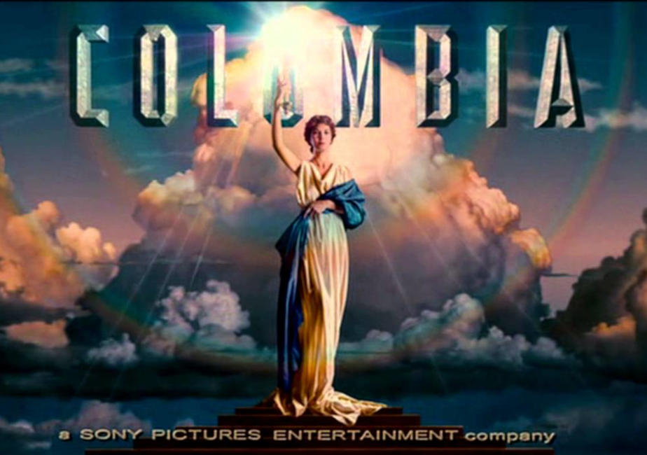

Columbia Pictures Industries, Inc. is an American film studio and production and distribution company that is a member of the Sony Pictures Motion Picture Group, a division of Sony Entertainment's Sony Pictures subsidiary of the Japanese multinational conglomerate Sony Corporation. What would eventually become Columbia Pictures, CBC Film Sales Corporation was founded on June 19, 1918 by Harry Cohn, his brother Jack Cohn, and Joe Brandt. It adopted the Columbia Pictures name in 1924, went public two years later, and eventually began to use the image of Columbia, the female personification of the United States, as its logo.
In its early years, Columbia was a minor player in Hollywood, but began to grow in the late 1920s, spurred by a successful association with director Frank Capra. With Capra and others, Columbia became one of the primary homes of the screwball comedy. In the 1930s, Columbia's major contract stars were Jean Arthur and Cary Grant. In the 1940s, Rita Hayworth became the studio's premier star and propelled their fortunes into the late 1950s. Rosalind Russell, Glenn Ford, and William Holden also became major stars at the studio.
It is one of the leading film studios in the world and is a member of the "Big Five" major American film studios. Columbia was one of the so-called "Little Three" among the eight major film studios of Hollywood's Golden Age. Today, it has become the world's fourth largest major film studio. The company was primarily responsible for distributing Disney's Silly Symphony film series as well as the Mickey Mouse cartoon series during 1929 and 1930.
Titles
More to Be Pitied Than Scorned August 20, 1922
Only a Shop Girl December 15, 1922
Temptation March 1, 1923
Her Accidental Husband April 16, 1923
Mary of the Movies August 15, 1923
The Barefoot Boy August 15, 1923
Yesterday's Wife August 15, 1923
Forgive and Forget September 15, 1923
The Marriage Market October 25, 1923
Innocence December 1, 1923
Discontented Husbands January 15, 1924
Traffic in Hearts May 23, 1924
The Midnight Express June 1, 1924
Racing for Life August 8, 1924
The Foolish Virgin August 15, 1924
The Fatal Mistake September 1, 1924
The Price She Paid September 15, 1924
The Beautiful Sinner October 1, 1924
Women First November 1, 1924
One Glorious Night December 1, 1924
A Fool and His Money January 1, 1925
Who Cares February 1, 1925
Charley's Aunt February 8, 1925
Justice of the Far North March 1925
An Enemy of Men June 1, 1925
After Business Hours June 16, 1925
Fighting Youth June 28, 1925
The Danger Signal July 1, 1925
Speed Mad July 15, 1925
The Unwritten Law August 1, 1925
The Price of Success August 15, 1925
Fighting the Flames August 23, 1925
The New Champion September 1, 1925
Sealed Lips September 15, 1925
The Great Sensation October 1, 1925
Steppin' Out October 15, 1925
When Husbands Flirt November 1, 1925
A Fight to the Finish November 1, 1925
The Fate of a Flirt November 15, 1925
The Handsome Brute December 1, 1925
The Lure of the Wild December 12, 1925
S.O.S. Perils of the Sea February 1, 1926
The Thrill Hunter February 1, 1926
Ladies of Leisure March 1, 1926
The Belle of Broadway August 15, 1926
The Lone Wolf Returns August 15, 1926
The False Alarm September 20, 1926
Sweet Rosie O'Grady October 5, 1926
When the Wife's Away October 20, 1926
Obey the Law November 5, 1926
The Truthful Sex November 20, 1926
The Better Way December 5, 1926
Remember December 20, 1926
Stolen Pleasures January 5, 1927
Wandering Girls January 20, 1927
The Wreck February 5, 1927
The Bachelor's Baby February 20, 1927
The Price of Honor March 5, 1927
Birds of Prey March 20, 1927
Paying the Price April 5, 1927
Pleasure Before Business April 20, 1927
Poor Girls May 5, 1927
Rich Men's Sons May 20, 1927
The Romantic Age June 5, 1927
The Kid Sister July 5, 1927
The Blood Ship July 18, 1927
For Ladies Only July 20, 1927
The Swell-Head August 5, 1927
Alias the Lone Wolf August 22, 1927
Sally in Our Alley September 3, 1927
The Clown September 15, 1927
By Whose Hand? September 15, 1927
The Isle of Forgotten Women September 27, 1927
The Tigress October 21, 1927
Stage Kisses November 2, 1927
The Opening Night November 14, 1927
The Warning November 26, 1927
The College Hero November 27, 1927
The Siren December 20, 1927
That Certain Thing January 1, 1928
The Wife's Relations January 13, 1928
Lady Raffles January 25, 1928
So This Is Love? February 6, 1928
A Woman's Way February 18, 1928
The Sporting Life March 2, 1928
The Matinee Idol March 14, 1928
The Desert Bride March 26, 1928
Broadway Daddies April 7, 1928
After the Storm April 19, 1928
Golf Widows May 1, 1928
Modern Mothers May 13, 1928
Name the Woman May 25, 1928
The Way of the Strong June 19, 1928
Ransom June 30, 1928
Beware of Blondes July 1, 1928
Say It with Sables July 13, 1928
Virgin Lips July 25, 1928
The Scarlet Lady August 1, 1928
Court Martial August 12, 1928
Runaway Girls August 23, 1928
The Street of Illusion September 3, 1928
Sinner's Parade September 14, 1928
Driftwood October 15, 1928
Stool Pigeon October 25, 1928
The Power of the Press October 31, 1928
Nothing to Wear November 5, 1928
Submarine November 12, 1928
The Apache November 19, 1928
Restless Youth November 30, 1928
Fashion Madness December 8, 1928
The Sideshow December 11, 1928
Object: Alimony December 22, 1928
The Faker January 2, 1929
The Lone Wolf's Daughter February 18, 1929
Behind Closed Doors February 24, 1929
The Younger Generation March 4, 1929
Trial Marriage March 10, 1929
The Eternal Woman March 18, 1929
The Quitter April 1, 1929
The Donovan Affair April 11, 1929
Father and Son May 13, 1929
The Bachelor Girl May 20, 1929
The Flying Marine June 5, 1929
The Fall of Eve June 17, 1929
Light Fingers July 29, 1929
The College Coquette August 5, 1929
Flight September 14, 1929
Hurricane September 30, 1929
Broadway Scandals November 10, 1929
Song of Love November 13, 1929
Acquitted November 15, 1929
Wall Street December 1, 1929
The Broadway Hoofer December 15, 1929
Mexicali Rose December 26, 1929
The Melody Man January 15, 1930
Murder on the Roof January 29, 1930
Personality February 14, 1930
Vengeance February 22, 1930
Guilty? March 3, 1930
A Royal Romance March 17, 1930
Prince of Diamonds March 26, 1930
Ladies of Leisure April 5, 1930
Around the Corner April 25, 1930
Soldiers and Women April 30, 1930
Call of the West May 10, 1930
Temptation June 5, 1930
Sisters June 15, 1930
The Lone Rider July 13, 1930
Hell's Island July 16, 1930
Ladies Must Play August 1, 1930
Rain or Shine August 15, 1930
Africa Speaks! August 15, 1930
The Squealer August 20, 1930
The Last of the Lone Wolf August 26, 1930
For the Love o' Lil August 29, 1930
Shadow Ranch September 28, 1930
Sweethearts on Parade September 28, 1930
Atlantic October 4, 1930
Men Without Law October 15, 1930
Brothers October 19, 1930
Tol'able David November 15, 1930
Madonna of the Streets November 25, 1930
The Dawn Trail November 28, 1930
Charley's Aunt December 25, 1930
The Lion and the Lamb January 1, 1931
The Criminal Code January 3, 1931
Desert Vengeance January 25, 1931
The Last Parade January 31, 1931
Ten Cents a Dance March 6, 1931
The Avenger March 6, 1931
The Lightning Flyer March 20, 1931
Dirigible April 4, 1931
Meet the Wife April 17, 1931
Subway Express May 1, 1931
The Flood May 3, 1931
The Texas Ranger May 10, 1931
Sky Raiders May 15, 1931
The Fighting Sheriff May 15, 1931
The Good Bad Girl May 20, 1931
Lover Come Back June 16, 1931
Arizona June 27, 1931
The Miracle Woman August 7, 1931
Fifty Fathoms Deep August 20, 1931
The Dreyfus Case August 28, 1931
Branded September 1, 1931
The Pagan Lady September 8, 1931
Shanghaied Love September 20, 1931
A Dangerous Affair September 30, 1931
Border Law October 15, 1931
The One Way Trail October 15, 1931
Platinum Blonde October 31, 1931
Shotgun Pass November 1, 1931
The Guilty Generation November 19, 1931
The Deceiver November 21, 1931
The Fighting Marshal November 25, 1931
The Range Feud December 2, 1931
The Deadline December 3, 1931
Men in Her Life December 10, 1931
The Secret Witness December 12, 1931
Maker of Men December 18, 1931
Ridin' for Justice January 4, 1932
One Man Law January 11, 1932
Forbidden January 15, 1932
The Fighting Fool January 20, 1932
The Menace January 29, 1932
Three Wise Girls February 9, 1932
The Final Edition February 12, 1932
Texas Cyclone February 24, 1932
Behind the Mask February 25, 1932
South of the Rio Grande March 5, 1932
The Big Timer March 10, 1932
Love Affair March 17, 1932
Shopworn March 25, 1932
High Speed April 2, 1932
The Riding Tornado May 4, 1932
Attorney for the Defense May 21, 1932
No Greater Love June 4, 1932
Two-Fisted Law June 8, 1932
Hollywood Speaks June 25, 1932
By Whose Hand? July 6, 1932
Hello Trouble July 15, 1932
War Correspondent July 25, 1932
Daring Danger July 27, 1932
American Madness August 4, 1932
Cornered August 5, 1932
The Night Mayor August 19, 1932
McKenna of the Mounted August 26, 1932
The Night Club Lady August 27, 1932
Fighting for Justice August 28, 1932
The Last Man August 31, 1932
This Sporting Age September 15, 1932
The Western Code September 16, 1932
White Eagle October 7, 1932
Washington Merry-Go-Round October 15, 1932
Vanity Street October 15, 1932
Virtue October 25, 1932
Deception November 4, 1932
Speed Demon November 11, 1932
That's My Boy November 13, 1932
Man Against Woman November 15, 1932
Forbidden Trail November 18, 1932
No More Orchids November 25, 1932
End of the Trail December 19, 1932
As the Devil Commands December 24, 1932
Sundown Rider December 30, 1932
The Bitter Tea of General Yen January 6, 1933
Air Hostess January 15, 1933
Man of Action January 20, 1933
Treason February 10, 1933
State Trooper February 11, 1933
Child of Manhattan February 11, 1933
Silent Men March 3, 1933
Parole Girl March 4, 1933
Mussolini Speaks March 10, 1933
Obey the Law March 11, 1933
The California Trail March 24, 1933
Below the Sea March 29, 1933
Soldiers of the Storm April 4, 1933
The Circus Queen Murder April 10, 1933
The Whirlwind April 14, 1933
So This Is Africa April 22, 1933
Night of Terror April 24, 1933
The Thrill Hunter April 30, 1933
Unknown Valley May 5, 1933
When Strangers Marry May 25, 1933
Rusty Rides Alone May 26, 1933
Cocktail Hour June 5, 1933
Ann Carver's Profession June 9, 1933
Dangerous Crossroads June 15, 1933
What Price Innocence? June 24, 1933
The Woman I Stole June 30, 1933
The Wrecker July 10, 1933
Lady for a Day September 13, 1933
Brief Moment September 29, 1933
Police Car 17 September 30, 1933
My Woman October 5, 1933
Fury of the Jungle October 23, 1933
Hold the Press October 25, 1933
Man's Castle October 27, 1933
King of the Wild Horses November 10, 1933
Fog November 11, 1933
Before Midnight November 18, 1933
East of Fifth Avenue November 28, 1933
Master of Men November 28, 1933
Shadows of Sing Sing December 3, 1933
Above the Clouds December 13, 1933
Straightaway December 22, 1933
Let's Fall in Love December 26, 1933
The Fighting Code December 30, 1933
The Ninth Guest January 31, 1934
Speed Wings February 5, 1934
It Happened One Night February 23, 1934
Social Register March 10, 1934
The Fighting Ranger March 17, 1934
Once to Every Woman March 24, 1934
The Man Trailer March 24, 1934
No Greater Glory March 30, 1934
Voice in the Night April 6, 1934
Whirlpool April 10, 1934
Sisters Under the Skin April 15, 1934
The Line-Up April 17, 1934
The Crime of Helen Stanley April 20, 1934
One Is Guilty May 3, 1934
Twentieth Century May 11, 1934
Hell Bent for Love May 19, 1934
Most Precious Thing in Life June 5, 1934
Black Moon June 15, 1934
A Man's Game June 16, 1934
The Hell Cat June 16, 1934
Whom the Gods Destroy July 12, 1934
The Defense Rests July 15, 1934
Blind Date July 20, 1934
Name the Woman July 25, 1934
Beyond the Law July 31, 1934
The Lady Is Willing August 11, 1934
The Party's Over August 30, 1934
Girl in Danger September 11, 1934
One Night of Love September 15, 1934
Among the Missing September 25, 1934
That's Gratitude October 8, 1934
Lady by Choice October 15, 1934
Against the Law October 25, 1934
The Captain Hates the Sea November 2, 1934
The Prescott Kid November 8, 1934
I'll Fix It November 10, 1934
Men of the Night November 18, 1934
Jealousy November 23, 1934
The Westerner December 10, 1934
Fugitive Lady December 10, 1934
Mills of the Gods December 15, 1934
Broadway Bill December 27, 1934
Behind the Evidence January 8, 1935
The Best Man Wins January 15, 1935
Square Shooter January 21, 1935
Carnival February 15, 1935
Law Beyond the Range February 15, 1935
The Whole Town's Talking February 22, 1935
Death Flies East February 28, 1935
In Spite of Danger March 8, 1935
Let's Live Tonight March 16, 1935
The Revenge Rider March 18, 1935
I'll Love You Always March 20, 1935
The Unwelcome Stranger April 6, 1935
Eight Bells April 11, 1935
Fighting Shadows April 18, 1935
Party Wire April 27, 1935
Swellhead May 4, 1935
Men of the Hour May 5, 1935
Air Hawks May 7, 1935
The Awakening of Jim Burke May 18, 1935
Justice of the Range May 25, 1935
Unknown Woman June 21, 1935
Love Me Forever June 28, 1935
Riding Wild June 28, 1935
The Black Room July 15, 1935
Champagne for Breakfast July 16, 1935
After the Dance July 26, 1935
Western Frontier August 7, 1935
Together We Live August 16, 1935
Atlantic Adventure August 25, 1935
She Married Her Boss September 19, 1935
The Public Menace September 24, 1935
The Girl Friend September 28, 1935
She Couldn't Take It October 8, 1935
Case of the Missing Man October 20, 1935
A Feather in Her Hat October 25, 1935
Grand Exit October 25, 1935
Western Courage October 29, 1935
Guard That Girl November 2, 1935
Crime and Punishment November 22, 1935
Escape from Devil's Island November 24, 1935
One Way Ticket November 25, 1935
Gallant Defender November 30, 1935
Super Speed December 2, 1935
Lawless Riders December 6, 1935
The Calling of Dan Matthews December 10, 1935
Heir to Trouble December 17, 1935
Too Tough to Kill December 20, 1935
White Lies December 27, 1935
If You Could Only Cook December 30, 1935
The Lone Wolf Returns December 31, 1935
Dangerous Intrigue January 4, 1936
The Mysterious Avenger January 17, 1936
You May Be Next! February 6, 1936
Hell-Ship Morgan February 8, 1936
Lady of Secrets February 21, 1936
The Music Goes 'Round February 27, 1936
Don't Gamble with Love February 28, 1936
Heroes of the Range March 28, 1936
Pride of the Marines April 2, 1936
Panic on the Air April 10, 1936
Mr. Deeds Goes to Town April 12, 1936
Devil's Squadron May 1, 1936
Roaming Lady May 2, 1936
The Mine with the Iron Door May 6, 1936
Avenging Waters May 8, 1936
Abdul the Damned May 10, 1936
And So They Were Married May 10, 1936
Counterfeit May 25, 1936
The Cattle Thief May 26, 1936
The King Steps Out May 28, 1936
The Fugitive Sheriff June 1, 1936
Secret Patrol June 3, 1936
Trapped by Television June 15, 1936
The Final Hour July 7, 1936
Shakedown July 17, 1936
Blackmailer July 23, 1936
Meet Nero Wolfe August 1, 1936
Two-Fisted Gentleman August 15, 1936
They Met in a Taxi September 9, 1936
The Unknown Ranger September 15, 1936
Alibi for Murder September 23, 1936
Craig's Wife September 25, 1936
The Man Who Lived Twice September 25, 1936
Adventure in Manhattan October 8, 1936
Code of the Range October 9, 1936
End of the Trail October 11, 1936
Tugboat Princess October 15, 1936
Killer at Large October 27, 1936
Legion of Terror November 1, 1936
Come Closer, Folks November 7, 1936
Theodora Goes Wild November 12, 1936
North of Nome November 14, 1936
The Cowboy Star November 20, 1936
Pennies from Heaven November 25, 1936
Stampede November 27, 1936
Rio Grande Ranger December 11, 1936
Dodge City Trail December 12, 1936
Lady from Nowhere December 23, 1936
More Than a Secretary December 24, 1936
Counterfeit Lady December 31, 1936
Find the Witness January 8, 1937
Ranger Courage January 10, 1937
Woman in Distress January 17, 1937
Westbound Mail January 22, 1937
The Devil's Playground January 24, 1937
The Beloved Vagabond February 7, 1937
When You're in Love February 12, 1937
Trapped March 3, 1937
Women of Glamour March 9, 1937
Trouble in Morocco March 9, 1937
Parole Racket March 11, 1937
Let's Get Married March 25, 1937
Racketeers in Exile March 30, 1937
Motor Madness April 5, 1937
Two Gun Law April 6, 1937
I Promise to Pay April 21, 1937
Thunder in the City April 22, 1937
Criminals of the Air April 30, 1937
The Frame-Up May 2, 1937
Speed to Spare May 4, 1937
Law of the Ranger May 11, 1937
Venus Makes Trouble May 14, 1937
The League of Frightened Men May 25, 1937
Reckless Ranger May 30, 1937
Two-Fisted Sheriff June 15, 1937
Girls Can Play June 23, 1937
The Devil Is Driving June 25, 1937
A Fight to the Finish June 30, 1937
One Man Justice July 1, 1937
Roaring Timber July 4, 1937
It Can't Last Forever July 15, 1937
A Dangerous Adventure July 22, 1937
The Rangers Step In August 8, 1937
Outlaws of the Orient August 20, 1937
Lost Horizon September 1, 1937
It's All Yours September 1, 1937
It Happened in Hollywood September 7, 1937
Trapped by G-Men September 9, 1937
The Game That Kills September 21, 1937
Life Begins with Love October 7, 1937
Counsel for Crime October 14, 1937
The Awful Truth October 21, 1937
Murder in Greenwich Village November 3, 1937
Hollywood Round-Up November 6, 1937
The Old Wyoming Trail November 8, 1937
I'll Take Romance November 17, 1937
Under Suspicion November 22, 1937
She Married an Artist November 27, 1937
Outlaws of the Prairie December 1, 1937
Paid to Dance December 11, 1937
Headin' East December 13, 1937
All American Sweetheart December 20, 1937
The Shadow December 22, 1937
Penitentiary January 17, 1938
Little Miss Roughneck January 23, 1938
No Time to Marry February 5, 1938
Cattle Raiders February 12, 1938
Who Killed Gail Preston? February 24, 1938
Women in Prison March 2, 1938
Start Cheering March 3, 1938
Rolling Caravans March 7, 1938
When G-Men Step In March 17, 1938
Making the Headlines April 1, 1938
The Overland Express April 11, 1938
Call of the Rockies April 12, 1938
Wide Open Faces April 18, 1938
Flight Into Nowhere April 19, 1938
There's Always a Woman April 20, 1938
Extortion May 9, 1938
Woman Against the World May 11, 1938
Law of the Plains May 12, 1938
The Lone Wolf in Paris May 25, 1938
Holiday June 15, 1938
Reformatory June 20, 1938
Stagecoach Days June 20, 1938
The Main Event June 22, 1938
Highway Patrol June 27, 1938
Squadron of Honor June 28, 1938
West of Cheyenne June 30, 1938
City Streets July 1, 1938
Pioneer Trail July 15, 1938
South of Arizona July 28, 1938
The Gladiator August 15, 1938
Convicted August 18, 1938
I Am the Law August 25, 1938
Phantom Gold August 31, 1938
You Can't Take It With You September 1, 1938
Juvenile Court September 15, 1938
The Stranger from Arizona September 22, 1938
Girls' School September 30, 1938
West of the Santa Fe October 3, 1938
Crime Takes a Holiday October 5, 1938
Flight to Fame October 12, 1938
The Lady Objects October 21, 1938
Law of the Texan October 24, 1938
In Early Arizona November 2, 1938
Adventure in Sahara November 15, 1938
Abused Confidence November 30, 1938
Blondie November 30, 1938
The Terror of Tiny Town December 1, 1938
Rio Grande December 8, 1938
The Little Adventuress December 9, 1938
California Frontier December 15, 1938
The Strange Case of Dr. Meade December 15, 1938
Smashing the Spy Ring December 29, 1938
Homicide Bureau January 5, 1939
There's That Woman Again January 6, 1939
The Thundering West January 12, 1939
Farewell Waltz January 15, 1939
Frontiers of '49 January 19, 1939
North of Shanghai January 24, 1939
The Lone Wolf Spy Hunt January 27, 1939
Texas Stampede February 9, 1939
My Son Is a Criminal February 22, 1939
Blondie Meets the Boss March 8, 1939
Lone Star Pioneers March 16, 1939
Whispering Enemies March 24, 1939
Let Us Live March 29, 1939
Romance of the Redwoods March 30, 1939
North of the Yukon March 30, 1939
The Lady and the Mob April 3, 1939
The Alibi April 9, 1939
First Offenders April 12, 1939
The Law Comes to Texas April 16, 1939
Spoilers of the Range April 27, 1939
Outside These Walls May 4, 1939
Blind Alley May 11, 1939
Only Angels Have Wings May 15, 1939
Youth in Revolt May 15, 1939
Missing Daughters May 22, 1939
Men with Whips May 1939
Trapped in the Sky June 1, 1939
Boys' School June 5, 1939
Western Caravans June 15, 1939
Good Girls Go to Paris June 20, 1939
Clouds Over Europe June 20, 1939
The Man from Sundown July 15, 1939
Blondie Takes a Vacation July 20, 1939
Behind Prison Gates July 28, 1939
Coast Guard August 4, 1939
The Man They Could Not Hang August 17, 1939
Five Little Peppers and How They Grew August 22, 1939
Riders of Black River August 23, 1939
Konga, the Wild Stallion August 30, 1939
Golden Boy September 5, 1939
Hidden Power September 7, 1939
Outpost of the Mounties September 13, 1939
Those High Gray Walls September 21, 1939
Parents on Trial September 21, 1939
A Woman Is the Judge October 3, 1939
U-Boat 29 October 7, 1939
Scandal Sheet October 16, 1939
Mr. Smith Goes to Washington October 19, 1939
Beware Spooks! October 24, 1939
Blondie Brings Up Baby November 8, 1939
The Amazing Mr. Williams November 23, 1939
The Stranger from Texas December 2, 1939
The Chess Player December 3, 1939
Fugitive at Large December 7, 1939
Taming of the West December 7, 1939
Two-Fisted Rangers December 13, 1939
Miracle on Main Street December 19, 1939
My Son Is Guilty December 28, 1939
Music in My Heart January 4, 1940
Cafe Hostess January 11, 1940
His Girl Friday January 18, 1940
The Lone Wolf Strikes January 26, 1940
Convicted Woman January 31, 1940
Five Little Peppers at Home February 8, 1940
Pioneers of the Frontier February 14, 1940
Blondie on a Budget February 29, 1940
Bullets for Rustlers March 5, 1940
The Fight for Life March 7, 1940
Outside the Three-Mile Limit March 7, 1940
Too Many Husbands March 21, 1940
Blazing Six Shooters April 11, 1940
The Man with Nine Lives April 18, 1940
The Doctor Takes a Wife April 25, 1940
21 Days Together April 29, 1940
The Man from Tumbleweeds May 2, 1940
Men Without Souls May 20, 1940
Island of Doomed Men May 20, 1940
Escape to Glory May 20, 1940
Texas Stagecoach May 23, 1940
The Lone Wolf Meets a Lady May 30, 1940
Passport to Alcatraz June 6, 1940
Babies for Sale June 14, 1940
Mad Men of Europe June 26, 1940
Thunder Over Paris June 27, 1940
The Return of Wild Bill June 27, 1940
Out West with the Peppers June 30, 1940
I Married Adventure July 24, 1940
Girls of the Road July 24, 1940
Blondie Has Servant Trouble July 25, 1940
Military Academy August 6, 1940
The Lady in Question August 7, 1940
The Secret Seven August 15, 1940
The Durango Kid August 15, 1940
He Stayed for Breakfast August 31, 1940
Five Little Peppers in Trouble September 1, 1940
Before I Hang September 17, 1940
The Howards of Virginia September 19, 1940
Glamour for Sale September 27, 1940
Prairie Schooners September 30, 1940
Angels Over Broadway October 2, 1940
So You Won't Talk October 3, 1940
Fugitive from a Prison Camp October 5, 1940
Nobody's Children October 17, 1940
West of Abilene October 21, 1940
Blondie Plays Cupid October 31, 1940
Beyond the Sacramento November 11, 1940
Girls Under 21 November 15, 1940
The Lone Wolf Keeps a Date November 23, 1940
Ellery Queen, Master Detective November 30, 1940
Thundering Frontier December 5, 1940
The Great Plane Robbery December 9, 1940
The Phantom Submarine December 20, 1940
Arizona December 25, 1940
The Wildcat of Tucson December 31, 1940
This Thing Called Love January 2, 1941
The Face Behind the Mask January 16, 1941
The Devil Commands February 3, 1941
A Voice in the Night February 4, 1941
The Pinto Kid February 5, 1941
Across the Sierras February 13, 1941
Meet Boston Blackie February 20, 1941
Outlaws of the Panhandle February 27, 1941
Blondie Goes Latin February 27, 1941
The Lone Wolf Takes a Chance March 6, 1941
Ellery Queen's Penthouse Mystery March 24, 1941
Adam Had Four Sons March 27, 1941
North from the Lone Star March 31, 1941
The Great Swindle April 10, 1941
Missing Ten Days April 20, 1941
Penny Serenade April 24, 1941
Under Age April 24, 1941
The Big Boss April 28, 1941
The Return of Daniel Boone May 7, 1941
Her First Beau May 8, 1941
She Knew All the Answers May 14, 1941
They Dare Not Love May 16, 1941
Adventure in Washington May 29, 1941
Time Out for Rhythm June 5, 1941
Naval Academy June 5, 1941
Hands Across the Rockies June 19, 1941
The Medico of Painted Springs June 26, 1941
Sweetheart of the Campus June 26, 1941
Two in a Taxi July 10, 1941
The Son of Davy Crockett July 15, 1941
Blondie in Society July 17, 1941
Thunder Over the Prairie July 30, 1941
The Richest Man in Town August 2, 1941
I Was a Prisoner on Devil's Island August 4, 1941
Here Comes Mr. Jordan August 7, 1941
Tillie the Toiler August 7, 1941
King of Dodge City August 14, 1941
Ellery Queen and the Perfect Crime August 14, 1941
Our Wife August 20, 1941
Mystery Ship September 4, 1941
Ladies in Retirement September 9, 1941
Harmon of Michigan September 11, 1941
Prairie Stranger September 18, 1941
You'll Never Get Rich September 25, 1941
Two Latins from Manhattan October 2, 1941
The Stork Pays Off October 6, 1941
Texas October 9, 1941
The Officer and the Lady October 12, 1941
The Blonde from Singapore October 16, 1941
Roaring Frontiers October 16, 1941
You Belong to Me October 22, 1941
Three Girls About Town October 23, 1941
The Men in Her Life October 30, 1941
The Royal Mounted Patrol November 13, 1941
Secrets of the Lone Wolf November 13, 1941
Ellery Queen and the Murder Ring November 18, 1941
Go West, Young Lady November 27, 1941
Sing for Your Supper December 4, 1941
Confessions of Boston Blackie December 8, 1941
Honolulu Lu December 11, 1941
Riders of the Badlands December 18, 1941
Harvard, Here I Come! December 18, 1941
Bedtime Story December 25, 1941
South American George December 27, 1941
The Lone Star Vigilantes January 1, 1942
West of Tombstone January 15, 1942
Blondie Goes to College January 15, 1942
Cadets on Parade January 22, 1942
A Close Call for Ellery Queen January 29, 1942
The Man Who Returned to Life February 5, 1942
Bullets for Bandits February 12, 1942
The Lady Is Willing February 17, 1942
Shut My Big Mouth February 19, 1942
The Adventures of Martin Eden February 26, 1942
Lawless Plainsmen March 17, 1942
Canal Zone March 19, 1942
Two Yanks in Trinidad March 26, 1942
Tramp, Tramp, Tramp April 2, 1942
North of the Rockies April 2, 1942
Alias Boston Blackie April 2, 1942
Blondie's Blessed Event April 9, 1942
The Invaders April 15, 1942
Down Rio Grande Way April 23, 1942
Hello, Annapolis April 23, 1942
The Wife Takes a Flyer April 28, 1942
A Desperate Chance for Ellery Queen May 7, 1942
The Devil's Trail May 14, 1942
Not a Ladies' Man May 14, 1942
Meet the Stewarts May 21, 1942
Sweetheart of the Fleet May 21, 1942
Submarine Raider June 4, 1942
They All Kissed the Bride June 11, 1942
Riders of the Northland June 18, 1942
Atlantic Convoy July 2, 1942
Flight Lieutenant July 9, 1942
Prairie Gunsmoke July 16, 1942
Enemy Agents Meet Ellery Queen July 30, 1942
Blondie for Victory August 6, 1942
Parachute Nurse August 6, 1942
Bad Men of the Hills August 13, 1942
Vengeance of the West August 16, 1942
The Talk of the Town August 20, 1942
Sabotage Squad August 27, 1942
Counter-Espionage September 3, 1942
A Man's World September 17, 1942
My Sister Eileen September 24, 1942
Overland to Deadwood September 25, 1942
Lucky Legs October 1, 1942
The Daring Young Man October 8, 1942
The Spirit of Stanford October 8, 1942
The Lone Prairie October 15, 1942
Smith of Minnesota October 15, 1942
The Boogie Man Will Get You October 22, 1942
Stand By All Networks October 29, 1942
Riding Through Nevada November 2, 1942
Boston Blackie Goes Hollywood November 5, 1942
Laugh Your Blues Away November 12, 1942
You Were Never Lovelier November 19, 1942
Junior Army November 26, 1942
Pardon My Gun December 1, 1942
Underground Agent December 3, 1942
A Night to Remember December 10, 1942
A Tornado in the Saddle December 15, 1942
Commandos Strike at Dawn December 30, 1942
City Without Men January 14, 1943
One Dangerous Night January 22, 1943
Power of the Press January 28, 1943
The Fighting Buckaroo February 1, 1943
Reveille with Beverly February 4, 1943
No Place for a Lady February 11, 1943
Riders of the Northwest Mounted February 15, 1943
Something to Shout About February 25, 1943
Let's Have Fun March 4, 1943
After Midnight with Boston Blackie March 18, 1943
Murder in Times Square April 1, 1943
The More the Merrier April 7, 1943
She Has What It Takes April 15, 1943
Saddles and Sagebrush April 27, 1943
Redhead from Manhattan May 6, 1943
The Boy from Stalingrad May 20, 1943
The Desperadoes May 25, 1943
It's a Great Life May 27, 1943
Law of the Northwest May 27, 1943
Two Senoritas from Chicago June 10, 1943
Crime Doctor June 22, 1943
Frontier Fury June 24, 1943
Good Luck, Mr. Yates June 29, 1943
What's Buzzin', Cousin? July 8, 1943
Appointment in Berlin July 15, 1943
First Comes Courage July 29, 1943
Robin Hood of the Range July 29, 1943
Destroyer August 19, 1943
Passport to Suez August 19, 1943
Hail to the Rangers September 15, 1943
Dangerous Blondes September 23, 1943
Footlight Glamour September 30, 1943
Doughboys in Ireland October 7, 1943
The Chance of a Lifetime October 26, 1943
My Kingdom for a Cook October 27, 1943
Is Everybody Happy? October 28, 1943
Silver City Raiders November 4, 1943
Sahara November 11, 1943
The Return of the Vampire November 11, 1943
There's Something About a Soldier November 30, 1943
The Heat's On December 2, 1943
The Crime Doctor's Strangest Case December 9, 1943
Klondike Kate December 16, 1943
Swing Out the Blues December 23, 1943
Cowboy in the Clouds December 23, 1943
The Vigilantes Ride December 23, 1943
What a Woman! December 28, 1943
The Racket Man January 18, 1944
Beautiful But Broke January 28, 1944
None Shall Escape February 3, 1944
Cowboy Canteen February 8, 1944
The Ghost That Walks Alone February 10, 1944
Nine Girls February 17, 1944
Sailor's Holiday February 24, 1944
Two-Man Submarine March 16, 1944
Sundown Valley March 23, 1944
Cover Girl March 30, 1944
The Whistler March 30, 1944
Hey, Rookie April 6, 1944
Jam Session April 13, 1944
Wyoming Hurricane April 20, 1944
Girl in the Case April 20, 1944
The Black Parachute May 4, 1944
Riding West May 18, 1944
Stars on Parade May 25, 1944
Address Unknown June 1, 1944
The Last Horseman June 22, 1944
Once Upon a Time June 29, 1944
She's a Soldier Too June 29, 1944
Louisiana Hayride July 13, 1944
Mr. Winkle Goes to War July 19, 1944
U-Boat Prisoner July 25, 1944
Shadows in the Night July 27, 1944
Secret Command July 30, 1944
Swing in the Saddle July 31, 1944
Cry of the Werewolf August 17, 1944
The Soul of a Monster August 17, 1944
Kansas City Kitty August 24, 1944
The Impatient Years September 10, 1944
Ever Since Venus September 14, 1944
Underground Guerrillas September 14, 1944
Cowboy from Lonesome River September 21, 1944
Strange Affair October 5, 1944
They Live in Fear October 6, 1944
The Mark of the Whistler October 9, 1944
One Mysterious Night October 21, 1944
The Unwritten Code October 26, 1944
Cyclone Prairie Rangers November 9, 1944
Sergeant Mike November 9, 1944
The Missing Juror November 16, 1944
She's a Sweetheart December 7, 1944
Dancing in Manhattan December 14, 1944
Carolina Blues December 20, 1944
Saddle Leather Law December 21, 1944
Together Again December 22, 1944
Meet Miss Bobby Socks December 22, 1944
Tahiti Nights December 28, 1944
Let's Go Steady January 4, 1945
Tonight and Every Night January 9, 1945
Youth on Trial January 11, 1945
A Song to Remember January 18, 1945
Eadie Was a Lady January 23, 1945
I Love a Mystery January 25, 1945
Sagebrush Heroes February 1, 1945
Sing Me a Song of Texas February 8, 1945
Leave It to Blondie February 22, 1945
The Crime Doctor's Courage February 27, 1945
A Guy, a Gal and a Pal March 8, 1945
Rough Ridin' Justice March 14, 1945
Rough, Tough and Ready March 22, 1945
Escape in the Fog April 5, 1945
Eve Knew Her Apples April 12, 1945
Rockin' in the Rockies April 17, 1945
The Power of the Whistler April 19, 1945
The Return of the Durango Kid April 19, 1945
Counter-Attack April 26, 1945
29 Acacia Avenue May 1945
Boston Blackie Booked on Suspicion May 10, 1945
Both Barrels Blazing May 17, 1945
Ten Cents a Dance June 7, 1945
Blonde from Brooklyn June 21, 1945
Boston Blackie's Rendezvous July 5, 1945
A Thousand and One Nights July 20, 1945
One Exciting Night July 26, 1945
Over 21 August 8, 1945
The Gay Senorita August 8, 1945
Rustlers of the Badlands August 16, 1945
The Adventures of Rusty September 6, 1945
Rhythm Round-Up September 7, 1945
I Love a Bandleader September 13, 1945
Blazing the Western Trail September 18, 1945
Outlaws of the Rockies September 18, 1945
Crime Doctor's Warning September 27, 1945
Song of the Prairie September 27, 1945
Kiss and Tell October 4, 1945
The True Glory October 4, 1945
The Girl of the Limberlost October 11, 1945
Voice of the Whistler October 30, 1945
My Name Is Julia Ross November 8, 1945
Lawless Empire November 15, 1945
Prison Ship November 15, 1945
Snafu November 22, 1945
She Wouldn't Say Yes November 29, 1945
Hit the Hay November 29, 1945
Life with Blondie December 13, 1945
Texas Panhandle December 20, 1945
Pardon My Past December 25, 1945
Out of the Depths December 27, 1945
The Fighting Guardsman January 4, 1946
One Way to Love January 9, 1946
Tars and Spars January 10, 1946
A Close Call for Boston Blackie January 24, 1946
Meet Me on Broadway January 26, 1946
Frontier Gunlaw January 31, 1946
The Notorious Lone Wolf February 14, 1946
Roaring Rangers February 14, 1946
The Bandit of Sherwood Forest February 21, 1946
The Gentleman Misbehaves February 28, 1946
Just Before Dawn March 7, 1946
Throw a Saddle on a Star March 14, 1946
Gilda March 15, 1946
Perilous Holiday March 21, 1946
Talk About a Lady March 28, 1946
Gunning for Vengeance March 28, 1946
Night Editor March 29, 1946
Blondie's Lucky Day April 4, 1946
Mysterious Intruder April 19, 1946
Galloping Thunder April 25, 1946
The Phantom Thief May 2, 1946
That Texas Jamboree May 16, 1946
The Devil's Mask May 23, 1946
The Man Who Dared May 30, 1946
Two-Fisted Stranger May 30, 1946
The Walls Came Tumbling Down June 7, 1946
Renegades June 13, 1946
Dangerous Business June 20, 1946
The Return of Rusty June 27, 1946
The Unknown July 4, 1946
The Desert Horseman July 11, 1946
Cowboy Blues July 18, 1946
Sing While You Dance July 25, 1946
Personality Kid August 8, 1946
Heading West August 15, 1946
Singing on the Trail September 2, 1946
The Thrill of Brazil September 6, 1946
It's Great to Be Young September 12, 1946
Gallant Journey September 24, 1946
Shadowed September 26, 1946
The Jolson Story October 10, 1946
So Dark the Night October 10, 1946
Blondie Knows Best October 17, 1946
Crime Doctor's Man Hunt October 24, 1946
The Secret of the Whistler November 7, 1946
Landrush November 18, 1946
Terror Trail November 21, 1946
Betty Co-Ed November 28, 1946
The Fighting Frontiersman December 10, 1946
Boston Blackie and the Law December 12, 1946
Lone Star Moonlight December 12, 1946
The Return of Monte Cristo December 19, 1946
Alias Mr. Twilight December 24, 1946
Singin' in the Corn December 26, 1946
Blondie's Big Moment January 9, 1947
Dead Reckoning January 16, 1947
The Lone Wolf in Mexico January 16, 1947
Johnny O'Clock January 23, 1947
South of the Chisholm Trail January 30, 1947
The Thirteenth Hour February 6, 1947
Blind Spot February 6, 1947
Cigarette Girl February 13, 1947
Over the Santa Fe Trail February 13, 1947
Mr. District Attorney February 20, 1947
The Guilt of Janet Ames March 6, 1947
The Lone Hand Texan March 6, 1947
Millie's Daughter March 20, 1947
West of Dodge City March 27, 1947
King of the Wild Horses March 29, 1947
Blondie's Holiday April 10, 1947
Law of the Canyon April 24, 1947
For the Love of Rusty May 1, 1947
Bulldog Drummond at Bay May 15, 1947
Framed May 25, 1947
The Millerson Case May 29, 1947
Prairie Raiders May 29, 1947
The Corpse Came C.O.D. June 2, 1947
Little Miss Broadway June 19, 1947
Sport of Kings June 26, 1947
Swing the Western Way June 26, 1947
The Stranger from Ponca City July 3, 1947
Keeper of the Bees July 10, 1947
Gunfighters July 15, 1947
Last of the Redmen August 1, 1947
The Son of Rusty August 7, 1947
Riders of the Lone Star August 14, 1947
Down to Earth August 21, 1947
Smoky River Serenade August 21, 1947
Bulldog Drummond Strikes Back September 4, 1947
When a Girl's Beautiful September 25, 1947
Key Witness October 9, 1947
Buckaroo from Powder River October 14, 1947
Blondie in the Dough October 16, 1947
Sweet Genevieve October 23, 1947
Two Blondes and a Redhead November 5, 1947
The Last Round-Up November 5, 1947
Her Husband's Affairs November 12, 1947
The Lone Wolf in London November 13, 1947
Last Days of Boot Hill November 20, 1947
Pacific Adventure November 25, 1947
The Crime Doctor's Gamble November 27, 1947
It Had to Be You December 7, 1947
Devil Ship December 11, 1947
Blondie's Anniversary December 18, 1947
Rose of Santa Rosa December 25, 1947
The Swordsman January 2, 1948
Six-Gun Law January 9, 1948
I Love Trouble January 15, 1948
Glamour Girl January 16, 1948
The Prince of Thieves January 17, 1948
Mary Lou January 23, 1948
The Wreck of the Hesperus February 5, 1948
The Woman from Tangier February 12, 1948
Phantom Valley February 19, 1948
Relentless February 20, 1948
To the Ends of the Earth February 27, 1948
The Sign of the Ram March 3, 1948
The Mating of Millie March 8, 1948
The Return of the Whistler March 18, 1948
Song of Idaho March 20, 1948
Adventures in Silverado March 25, 1948
West of Sonora March 25, 1948
The Lost One March 29, 1948
My Dog Rusty April 8, 1948
Port Said April 15, 1948
Best Man Wins May 6, 1948
The Fuller Brush Man May 12, 1948
Trapped by Boston Blackie May 13, 1948
Whirlwind Raiders May 13, 1948
Blondie's Reward June 3, 1948
The Lady from Shanghai June 9, 1948
The Black Arrow June 30, 1948
Coroner Creek July 1, 1948
Blazing Across the Pecos July 1, 1948
Thunderhoof July 8, 1948
The Arkansas Swing July 29, 1948
The Strawberry Roan August 1, 1948
Trail to Laredo August 12, 1948
Lulu Belle August 15, 1948
The Loves of Carmen August 23, 1948
Walk a Crooked Mile September 2, 1948
The Gentleman from Nowhere September 9, 1948
Black Eagle September 16, 1948
Singin' Spurs September 23, 1948
Triple Threat September 30, 1948
I Surrender Dear October 7, 1948
The Gallant Blade October 13, 1948
El Dorado Pass October 14, 1948
The Untamed Breed October 21, 1948
Rusty Leads the Way October 21, 1948
The Return of October October 26, 1948
Leather Gloves November 11, 1948
Racing Luck November 18, 1948
Quick on the Trigger December 2, 1948
Jungle Jim December 15, 1948
Loaded Pistols December 15, 1948
Smoky Mountain Melody December 16, 1948
The Dark Past December 22, 1948
Blondie's Secret December 23, 1948
The Man from Colorado January 20, 1949
Shockproof January 25, 1949
The Big Sombrero January 29, 1949
Slightly French February 2, 1949
Rusty Saves a Life February 3, 1949
Challenge of the Range February 3, 1949
Ladies of the Chorus February 10, 1949
Affairs of a Rogue February 17, 1949
Knock on Any Door February 22, 1949
Song of India February 28, 1949
Boston Blackie's Chinese Venture March 2, 1949
The Walking Hills March 5, 1949
Blondie's Big Deal March 10, 1949
The Crime Doctor's Diary March 15, 1949
Riders of the Whistling Pines March 16, 1949
Manhattan Angel March 17, 1949
Make Believe Ballroom April 1, 1949
Desert Vigilante April 9, 1949
Home in San Antone April 15, 1949
The Undercover Man April 20, 1949
The Mutineers April 26, 1949
We Were Strangers April 27, 1949
The Lost Tribe May 3, 1949
Laramie May 19, 1949
Johnny Allegro May 26, 1949
The Doolins of Oklahoma May 27, 1949
The Blazing Trail June 5, 1949
Lust for Gold June 10, 1949
The Secret of St. Ives June 30, 1949
Anna Lucasta July 11, 1949
Kazan July 14, 1949
Law of the Barbary Coast July 21, 1949
Barbary Pirate July 28, 1949
Mr. Soft Touch August 1, 1949
South of Death Valley August 8, 1949
The Lone Wolf and His Lady August 11, 1949
Jolson Sings Again August 17, 1949
Air Hostess August 25, 1949
Rim of the Canyon August 30, 1949
Blondie Hits the Jackpot September 8, 1949
The Devil's Henchman September 15, 1949
The Cowboy and the Indians September 15, 1949
Miss Grant Takes Richmond September 20, 1949
Holiday in Havana October 1, 1949
Prison Warden October 20, 1949
Bandits of El Dorado October 20, 1949
Tokyo Joe October 26, 1949
Feudin' Rhythm November 1, 1949
Mary Ryan, Detective November 3, 1949
Rusty's Birthday November 3, 1949
All the King's Men November 8, 1949
Chinatown at Midnight November 17, 1949
Tell It to the Judge November 18, 1949
Horsemen of the Sierras November 22, 1949
Renegades of the Sage November 24, 1949
Riders in the Sky November 29, 1949
And Baby Makes Three December 2, 1949
Bodyhold December 8, 1949
Sons of New Mexico December 20, 1949
The Reckless Moment December 29, 1949
The Nevadan January 11, 1950
Mark of the Gorilla January 12, 1950
Trail of the Rustlers February 2, 1950
Girls' School February 9, 1950
The Traveling Saleswoman February 15, 1950
Tyrant of the Sea February 22, 1950
Mule Train February 22, 1950
Father Is a Bachelor February 22, 1950
Blondie's Hero March 9, 1950
A Woman of Distinction March 16, 1950
The Palomino March 18, 1950
Cargo to Capetown April 1, 1950
Outcast of Black Mesa April 13, 1950
Beware of Blondie April 13, 1950
Faust and the Devil April 26, 1950
Military Academy with That Tenth Avenue Gang April 27, 1950
Kill the Umpire April 27, 1950
Captive Girl April 27, 1950
No Sad Songs for Me April 28, 1950
Beauty on Parade May 4, 1950
In a Lonely Place May 17, 1950
Customs Agent May 18, 1950
Fortunes of Captain Blood May 19, 1950
Cow Town May 19, 1950
The Good Humor Man June 1, 1950
Texas Dynamo June 1, 1950
Hoedown June 1, 1950
State Penitentiary June 8, 1950
Rogues of Sherwood Forest June 21, 1950
711 Ocean Drive July 1, 1950
David Harding, Counterspy July 13, 1950
Beyond the Purple Hills July 25, 1950
Streets of Ghost Town August 3, 1950
On the Isle of Samoa August 3, 1950
The Petty Girl August 17, 1950
When You're Smiling August 30, 1950
Convicted August 1950
Rookie Fireman September 8, 1950
Across the Badlands September 14, 1950
The Fuller Brush Girl September 15, 1950
Indian Territory September 30, 1950
Between Midnight and Dawn October 1, 1950
Raiders of Tomahawk Creek October 1, 1950
The Great Manhunt October 4, 1950
Last of the Buccaneers October 25, 1950
Chain Gang November 1, 1950
Harriet Craig November 2, 1950
The Texan Meets Calamity Jane November 15, 1950
Emergency Wedding November 15, 1950
The Tougher They Come November 16, 1950
The Blazing Sun November 20, 1950
Counterspy Meets Scotland Yard November 21, 1950
Pygmy Island November 22, 1950
The Killer That Stalked New York December 1, 1950
Lightning Guns December 1, 1950
He's a Cockeyed Wonder December 2, 1950
Operation X December 10, 1950
Revenue Agent December 12, 1950
The Flying Missile December 24, 1950
Born Yesterday December 25, 1950
Frontier Outpost December 29, 1950
Stage to Tucson December 1950
Gasoline Alley January 2, 1951
Prairie Roundup January 15, 1951
Al Jennings of Oklahoma January 17, 1951
Gene Autry and the Mounties January 30, 1951
A Yank in Korea February 14, 1951
Ridin' the Outlaw Trail February 23, 1951
Fury of the Congo February 26, 1951
Flame of Stamboul March 5, 1951
My True Story March 8, 1951
Valentino March 10, 1951
Fort Savage Raiders March 15, 1951
Texans Never Cry March 15, 1951
M March 1951
Santa Fe April 1, 1951
Whirlwind April 16, 1951
The Brave Bulls April 18, 1951
Five April 25, 1951
Her First Romance May 4, 1951
Smuggler's Gold May 5, 1951
Snake River Desperadoes May 30, 1951
When the Redskins Rode May 30, 1951
Lorna Doone May 31, 1951
The Texas Rangers June 3, 1951
China Corsair June 12, 1951
Sirocco June 13, 1951
Silver Canyon June 20, 1951
Mask of the Avenger June 27, 1951
The Big Gusher July 1, 1951
Never Trust a Gambler July 13, 1951
Hurricane Island July 16, 1951
Pickup July 24, 1951
Bonanza Town July 26, 1951
Two of a Kind July 1951
The Whistle at Eaton Falls August 2, 1951
The Magic Face August 13, 1951
The Lady and the Bandit August 13, 1951
Cyclone Fury August 14, 1951
Criminal Lawyer August 23, 1951
Chain of Circumstance August 23, 1951
Saturday's Hero September 10, 1951
Corky of Gasoline Alley September 17, 1951
The Hills of Utah September 30, 1951
Sunny Side of the Street September 1951
Jungle Manhunt October 4, 1951
The Mob October 17, 1951
The Magic Carpet October 18, 1951
The Harlem Globetrotters October 24, 1951
The Family Secret October 24, 1951
Ten Tall Men October 26, 1951
The Kid from Amarillo October 30, 1951
The Son of Dr. Jekyll October 31, 1951
The Clouded Yellow November 12, 1951
Purple Heart Diary November 12, 1951
Valley of Fire November 20, 1951
Man in the Saddle December 2, 1951
The Barefoot Mailman December 3, 1951
Pecos River December 15, 1951
Death of a Salesman December 20, 1951
Indian Uprising January 2, 1952
Boots Malone January 11, 1952
The Old West January 15, 1952
Scandal Sheet January 16, 1952
Harem Girl January 21, 1952
Smoky Canyon January 31, 1952
The First Time January 31, 1952
Five Angles on Murder February 18, 1952
The Hawk of Wild River February 28, 1952
Okinawa February 28, 1952
The Marrying Kind March 13, 1952
Jungle Jim in the Forbidden Land March 17, 1952
Night Stage to Galveston March 18, 1952
My Six Convicts March 20, 1952
A Yank in Indo-China April 3, 1952
Laramie Mountains April 20, 1952
Walk East on Beacon! April 29, 1952
Thief of Damascus May 7, 1952
The Sniper May 9, 1952
Paula May 15, 1952
Apache Country May 30, 1952
Sound Off May 1952
Montana Territory June 1, 1952
Brave Warrior June 1, 1952
The Rough, Tough West June 15, 1952
The Brigand June 25, 1952
Cripple Creek July 1, 1952
California Conquest July 4, 1952
Red Snow July 7, 1952
Junction City July 12, 1952
Barbed Wire July 25, 1952
Affair in Trinidad July 30, 1952
Storm Over Tibet July 1952
The Kid from Broken Gun August 19, 1952
Captain Pirate August 27, 1952
Last Train from Bombay August 27, 1952
Assignment – Paris! September 4, 1952
Wagon Team September 30, 1952
Strange Fascination September 1952
Rainbow 'Round My Shoulder September 1952
The Four Poster October 8, 1952
The Golden Hawk October 17, 1952
The Happy Time October 30, 1952
Hangman's Knot November 15, 1952
Blue Canadian Rockies November 30, 1952
Voodoo Tiger November 1952
The Pathfinder December 9, 1952
Invasion U.S.A. December 10, 1952
The Member of the Wedding December 25, 1952
Eight Iron Men December 1952
Winning of the West January 1953
Last of the Comanches February 1, 1953
Savage Mutiny February 3, 1953
Target Hong Kong February 1953
All Ashore March 3, 1953
Prince of Pirates March 7, 1953
The Glass Wall March 20, 1953
Salome March 24, 1953
On Top of Old Smoky March 25, 1953
Jack McCall, Desperado April 1, 1953
One Girl's Confession April 6, 1953
Problem Girls April 7, 1953
Man in the Dark April 9, 1953
Fort Ti May 1, 1953
Ambush at Tomahawk Gap May 5, 1953
The Juggler May 5, 1953
Serpent of the Nile May 8, 1953
The 49th Man May 20, 1953
Siren of Bagdad May 20, 1953
Goldtown Ghost Riders May 20, 1953
The 5,000 Fingers of Dr. T July 1, 1953
The Last Posse July 4, 1953
Pack Train July 5, 1953
Let's Do It Again July 17, 1953
Flame of Calcutta July 20, 1953
Valley of Head Hunters July 29, 1953
The Stranger Wore a Gun July 29, 1953
Cruisin' Down the River August 3, 1953
From Here to Eternity August 5, 1953
Sky Commando August 21, 1953
Mission Over Korea August 1953
China Venture September 7, 1953
Saginaw Trail September 20, 1953
Conquest of Cochise September 1953
Combat Squad October 1, 1953
The Big Heat October 14, 1953
Slaves of Babylon October 1953
Prisoners of the Casbah November 3, 1953
Last of the Pony Riders November 3, 1953
Paris Model November 10, 1953
Gun Fury November 11, 1953
The Nebraskan December 2, 1953
El Alamein December 3, 1953
Killer Ape December 15, 1953
Miss Sadie Thompson December 23, 1953
Bad for Each Other December 24, 1953
The Wild One December 30, 1953
Paratrooper December 30, 1953
It Should Happen to You January 18, 1954
Bait February 24, 1954
Charge of the Lancers February 1954
The Battle of Rogue River March 1, 1954
Drive a Crooked Road March 10, 1954
Wyoming Renegades March 27, 1954
Jesse James vs. the Daltons April 2, 1954
Drums of Tahiti April 23, 1954
The Iron Glove April 1954
The Price of Living April 1954
Massacre Canyon May 1, 1954
The Miami Story May 3, 1954
Indiscretion of an American Wife May 10, 1954
The Mad Magician May 19, 1954
The Saracen Blade June 6, 1954
The Caine Mutiny June 24, 1954
Jungle Man-Eaters June 1954
The Outlaw Stallion July 3, 1954
Hell Below Zero July 16, 1954
On the Waterfront July 28, 1954
The Law vs. Billy the Kid August 1, 1954
Human Desire August 6, 1954
Pushover August 6, 1954
The Black Dakotas September 2, 1954
A Bullet Is Waiting September 4, 1954
The Black Knight October 28, 1954
Cannibal Attack November 1, 1954
The Detective November 1, 1954
Three Hours to Kill November 4, 1954
Malaga November 5, 1954
Phffft! November 10, 1954
The Affairs of Messalina November 1954
Masterson of Kansas December 1, 1954
They Rode West December 4, 1954
The Bamboo Prison December 1954
The Violent Men January 26, 1955
Ten Wanted Men February 1, 1955
The Long Gray Line February 10, 1955
Pirates of Tripoli February 10, 1955
Three for the Show February 24, 1955
Women's Prison February 1955
Tight Spot March 19, 1955
Cell 2455, Death Row April 19, 1955
New Orleans Uncensored April 30, 1955
Jungle Moon Men April 1955
Seminole Uprising May 1, 1955
The End of the Affair May 1955
5 Against the House June 10, 1955
Bring Your Smile Along June 22, 1955
The Night Holds Terror July 13, 1955
It Came from Beneath the Sea July 1955
Creature with the Atom Brain July 1955
Chicago Syndicate July 1955
Apache Ambush August 24, 1955
The Man from Laramie August 31, 1955
The Gun That Won the West September 1, 1955
Footsteps in the Fog September 14, 1955
Duel on the Mississippi September 16, 1955
My Sister Eileen September 22, 1955
Special Delivery September 1955
Count Three and Pray October 1955
Devil Goddess October 1, 1955
A Prize of Gold October 14, 1955
Queen Bee November 7, 1955
Three Stripes in the Sun November 23, 1955
The Crooked Web November 30, 1955
Teen-Age Crime Wave November 1955
The Last Frontier December 7, 1955
The Prisoner December 11, 1955
A Lawless Street December 15, 1955
Hell's Horizon December 1955
Inside Detroit January 1956
Fury at Gunsight Pass February 15, 1956
Picnic February 16, 1956
The Houston Story February 1956
Battle Stations February 1956
Joe MacBeth February 1956
Uranium Boom March 2, 1956
The Atomic Man March 4, 1956
Rock Around the Clock March 21, 1956
The Cockleshell Heroes March 27, 1956
Hot Blood March 1956
Blackjack Ketchum, Desperado April 1, 1956
Jubal April 6, 1956
The Last Ten Days April 11, 1956
Over-Exposed April 1956
The Harder They Fall May 9, 1956
Safari June 20, 1956
The Eddy Duchin Story June 21, 1956
Storm Over the Nile June 22, 1956
Secret of Treasure Mountain June 25, 1956
Storm Center July 31, 1956
The Werewolf July 1956
Earth vs. the Flying Saucers July 1956
Bermuda Affair July 1956
Autumn Leaves August 1, 1956
He Laughed Last August 12, 1956
The Solid Gold Cadillac August 22, 1956
Papa, Mama, the Maid and I August 27, 1956
Port Afrique September 7, 1956
The Silent World September 24, 1956
1984 September 1956
Miami Exposé September 1956
Cha-Cha-Cha Boom! October 2, 1956
You Can't Run Away from It October 31, 1956
Spin a Dark Web October 1956
The White Squaw November 1, 1956
Seven Samurai November 19, 1956
Suicide Mission November 1956
Odongo November 1956
Reprisal! November 1956
Don't Knock the Rock December 14, 1956
Full of Life December 25, 1956
7th Cavalry December 1956
Ride the High Iron December 1956
Rumble on the Docks December 1956
The Gamma People December 1956
The Last Man to Hang? December 1956
Zarak December 1956
Nightfall January 23, 1957
Utah Blaine February 1, 1957
Portrait in Smoke February 1957
The Shadow on the Window March 6, 1957
Zombies of Mora Tau March 1957
The Man Who Turned to Stone March 1957
The Phantom Stagecoach April 1, 1957
The Tall T April 2, 1957
The Strange One April 12, 1957
Abandon Ship! April 17, 1957
The Garment Jungle April 25, 1957
The Guns of Fort Petticoat April 1957
Sierra Stranger May 1, 1957
Torero May 21, 1957
Hellcats of the Navy May 1957
Beyond Mombasa June 1, 1957
20 Million Miles to Earth June 1957
Calypso Heat Wave June 1957
The Burglar June 1957
The Giant Claw June 1957
The Night the World Exploded June 1957
The Young Don't Cry July 26, 1957
The 27th Day July 1957
Jeanne Eagels August 2, 1957
3:10 to Yuma August 7, 1957
Fire Down Below August 8, 1957
Pickup Alley August 13, 1957
Operation Mad Ball August 17, 1957
No Time to Be Young August 1957
Town on Trial August 1957
Escape from San Quentin September 1957
The Brothers Rico September 1957
The Parson and the Outlaw September 1957
Pal Joey October 25, 1957
How to Murder a Rich Uncle October 25, 1957
Domino Kid October 1957
The Tijuana Story October 1957
The Story of Esther Costello November 6, 1957
Decision at Sundown November 10, 1957
The Admirable Crichton December 16, 1957
The Bridge on the River Kwai December 18, 1957
The River Girl December 18, 1957
The Hard Man December 1957
The Long Haul December 1957
The World Was His Jury January 1958
Return to Warbow January 1958
Cowboy February 19, 1958
Going Steady February 1958
The True Story of Lynn Stuart March 3, 1958
Bitter Victory March 1958
High Flight April 1958
Bonjour Tristesse April 1958
The Revenge of Frankenstein June 1, 1958
The Camp on Blood Island June 11, 1958
The Lineup June 11, 1958
The Goddess June 24, 1958
This Angry Age June 25, 1958
Screaming Mimi June 25, 1958
The Case Against Brooklyn June 1958
Let's Rock June 1958
The Key July 1, 1958
She Played with Fire July 8, 1958
Night of the Demon July 1958
Crash Landing July 1958
Gunman's Walk July 1958
Life Begins at 17 July 1958
Buchanan Rides Alone August 1, 1958
Me and the Colonel August 26, 1958
Tank Force August 1958
Apache Territory September 1, 1958
The Snorkel September 17, 1958
Ghost of the China Sea September 1958
The Whole Truth September 1958
The Last Hurrah October 24, 1958
Kill Her Gently October 1958
Tarawa Beachhead November 2, 1958
The 7th Voyage of Sinbad December 23, 1958
Bell, Book and Candle December 25, 1958
The Man Inside December 1958
Senior Prom December 1958
Murder by Contract December 1958
The Last Blitzkrieg January 30, 1959
Good Day for a Hanging January 1959
Forbidden Island February 10, 1959
Ride Lonesome February 15, 1959
City of Fear February 1959
Gideon of Scotland Yard February 1959
The Two-Headed Spy March 2, 1959
Verboten! March 25, 1959
Gunmen from Laredo March 1959
Juke Box Rhythm April 1, 1959
Gidget April 10, 1959
The Bandit of Zhobe April 1959
The Young Land May 1, 1959
The H-Man May 28, 1959
Face of a Fugitive May 1959
Middle of the Night June 17, 1959
Porgy and Bess June 24, 1959
Anatomy of a Murder July 1, 1959
The Tingler July 29, 1959
The Legend of Tom Dooley July 1959
The Woman Eater July 1959
Have Rocket, Will Travel August 1, 1959
It Happened to Jane August 5, 1959
Hey Boy! Hey Girl! August 5, 1959
The 30 Foot Bride of Candy Rock August 6, 1959
They Came to Cordura October 21, 1959
The Last Angry Man October 22, 1959
The Mouse That Roared October 26, 1959
The Crimson Kimono October 1959
Edge of Eternity November 2, 1959
Battle of the Coral Sea November 1959
The Warrior and the Slave Girl November 1959
1001 Arabian Nights December 1, 1959
Suddenly, Last Summer December 22, 1959
The Gene Krupa Story December 1959
The Flying Fontaines December 1959
Swan Lake January 25, 1960
Our Man in Havana January 27, 1960
Once More, with Feeling! February 11, 1960
Comanche Station February 16, 1960
Yesterday's Enemy March 3, 1960
Killers of Kilimanjaro April 6, 1960
Who Was That Lady? April 15, 1960
Because They're Young April 1960
Man on a String May 20, 1960
The Electronic Monster May 1960
The Stranglers of Bombay May 1960
Babette Goes to War June 7, 1960
Strangers When We Meet June 29, 1960
The Mountain Road June 1960
12 to the Moon June 1960
Stop, Look and Laugh July 1, 1960
Battle in Outer Space July 8, 1960
Murder Reported July 11, 1960
13 Ghosts August 5, 1960
Song Without End August 11, 1960
All the Young Men August 26, 1960
My Dog, Buddy August 1960
Surprise Package September 29, 1960
Anna of Brooklyn October 5, 1960
The Nights of Lucretia Borgia October 5, 1960
I Aim at the Stars October 19, 1960
The Enemy General October 19, 1960
Let No Man Write My Epitaph November 10, 1960
Hell Is a City November 13, 1960
Jazz Boat November 1960
The 3 Worlds of Gulliver December 16, 1960
Pepe December 21, 1960
The Wackiest Ship in the Army December 29, 1960
Carthage in Flames January 25, 1961
Sword of Sherwood Forest January 25, 1961
Hand in Hand February 6, 1961
Cry for Happy March 3, 1961
The Terror of the Tongs March 15, 1961
Passport to China March 22, 1961
Mein Kampf April 21, 1961
Please Turn Over April 28, 1961
Mad Dog Coll May 12, 1961
Underworld U.S.A. May 13, 1961
As the Sea Rages May 17, 1961
The Warrior Empress May 17, 1961
A Raisin in the Sun May 29, 1961
Gidget Goes Hawaiian June 2, 1961
The Full Treatment June 21, 1961
The Guns of Navarone June 22, 1961
Most Dangerous Man Alive July 4, 1961
The Queen of the Pirates July 26, 1961
Two Rode Together July 26, 1961
Homicidal July 26, 1961
Taste of Fear August 22, 1961
Mr. Sardonicus October 8, 1961
Five Golden Hours October 18, 1961
The Devil at 4 O'Clock October 18, 1961
A Weekend with Lulu November 1, 1961
The Greengage Summer November 21, 1961
Valley of the Dragons November 1961
Everything's Ducky December 20, 1961
Mysterious Island December 20, 1961
Twist Around the Clock December 30, 1961
Sail a Crooked Ship February 2, 1962
The Three Stooges Meet Hercules February 15, 1962
Walk on the Wild Side February 21, 1962
The Hellions March 14, 1962
Safe at Home! April 13, 1962
Experiment in Terror April 13, 1962
Don't Knock the Twist April 13, 1962
Five Finger Exercise April 19, 1962
Mothra May 10, 1962
Cash on Demand May 16, 1962
13 West Street June 6, 1962
Advise & Consent June 6, 1962
The Wild Westerners June 1962
The Three Stooges in Orbit July 4, 1962
The Notorious Landlady July 26, 1962
The Best of Enemies August 6, 1962
The Underwater City August 8, 1962
The Interns August 8, 1962
The Pirates of Blood River August 1962
Damn the Defiant! September 19, 1962
It's Trad, Dad! September 1962
Zotz! October 3, 1962
Barabbas October 10, 1962
Requiem for a Heavyweight October 16, 1962
We'll Bury You October 24, 1962
The War Lover October 25, 1962
The Trunk October 31, 1962
Sundays and Cybele November 23, 1962
Two Tickets to Paris November 28, 1962
Lawrence of Arabia December 16, 1962
Diamond Head February 13, 1963
Bye Bye Birdie April 4, 1963
The Man from the Diner's Club April 17, 1963
Drylanders April 1963
The L-Shaped Room May 27, 1963
Fury of the Pagans May 1963
Jason and the Argonauts June 19, 1963
Just for Fun June 1963
Gidget Goes to Rome August 7, 1963
The Three Stooges Go Around the World in a Daze August 21, 1963
Siege of the Saxons August 1963
13 Frightened Girls September 11, 1963
In the French Style September 18, 1963
The Running Man October 2, 1963
Under the Yum Yum Tree October 23, 1963
Maniac October 30, 1963
The Old Dark House October 31, 1963
The Cardinal December 12, 1963
The Victors December 19, 1963
The Swinging Maiden December 31, 1963
The Little Prince and the Eight-Headed Dragon January 1, 1964
Strait-Jacket January 19, 1964
Dr. Strangelove or: How I Learned to Stop Worrying and Love the Bomb January 29, 1964
The Crimson Blade March 1964
The Quick Gun April 1964
The Devil-Ship Pirates May 1964
Do You Know This Voice? June 1964
The New Interns June 1, 1964
Hey There, It's Yogi Bear! June 3, 1964
The Long Ships June 24, 1964
Good Neighbor Sam July 22, 1964
Ride the Wild Surf August 5, 1964
Behold a Pale Horse August 14, 1964
Lilith October 1, 1964
The Little Priest September 4, 1964
Fail-Safe October 7, 1964
The Pumpkin Eater November 9, 1964
The Finest Hours November 10, 1964
First Men in the Moon November 20, 1964
World Without Sun December 22, 1964
The Curse of the Mummy's Tomb December 31, 1964
The Outlaws Is Coming January 1, 1965
Baby the Rain Must Fall January 15, 1965
The Gorgon February 17, 1965
Love Has Many Faces February 24, 1965
Lord Jim February 25, 1965
Be My Guest March 1965
Major Dundee April 7, 1965
Apache Gold May 1, 1965
Synanon May 5, 1965
Victim Five May 19, 1965
Fanatic May 19, 1965
The Collector June 17, 1965
Genghis Khan June 23, 1965
Cat Ballou June 24, 1965
The Damned July 7, 1965
Harvey Middleman, Fireman July 12, 1965
Ship of Fools July 29, 1965
East of Sudan July 1965
Arizona Raiders August 1, 1965
The Great Sioux Massacre September 1, 1965
The Little Ones September 15, 1965
That Man in Istanbul September 16, 1965
Mickey One September 27, 1965
Bunny Lake Is Missing October 3, 1965
The Bedford Incident October 11, 1965
King Rat October 27, 1965
Winter A-Go-Go October 28, 1965
You Must Be Joking! October 1965
Hard Time for Princes October 1965
Treasure of Silver Lake November 1, 1965
The Magic World of Topo Gigio November 26, 1965
The Brigand of Kandahar November 1965
Rampage at Apache Wells January 1966
Ride Beyond Vengeance January 1966
The Chase February 17, 1966
The Silencers February 18, 1966
The Heroes of Telemark March 9, 1966
The Trouble with Angels March 30, 1966
Three on a Couch March 1966
Kidnapped to Mystery Island May 1966
Born Free June 22, 1966
Walk, Don't Run June 29, 1966
The Wrong Box July 19, 1966
Every Day Is a Holiday July 1966
The Man Called Flintstone August 3, 1966
A Study in Terror August 10, 1966
Birds Do It August 1966
Lost Command September 14, 1966
The Eavesdropper September 14, 1966
Rings Around the World September 27, 1966
Last of the Renegades September 1966
Dead Heat on a Merry-Go-Round October 12, 1966
Georgy Girl October 17, 1966
Alvarez Kelly October 1966
The Professionals November 2, 1966
The Texican November 1966
Frontier Hellcat November 1966
Traitor's Gate November 1966
A Man for All Seasons December 12, 1966
Murderers' Row December 20, 1966
Rage December 1966
Goal! The World Cup January 18, 1967
Kiss the Girls and Make Them Die January 25, 1967
The Deadly Affair January 26, 1967
The Night of the Generals February 24, 1967
Enter Laughing February 25, 1967
The Taming of the Shrew March 8, 1967
Casino Royale April 28, 1967
40 Guns to Apache Pass May 1, 1967
The Happening May 17, 1967
To Sir, with Love June 14, 1967
Divorce American Style June 21, 1967
The Big Mouth July 12, 1967
The Love-Ins July 26, 1967
Luv July 26, 1967
Good Times August 2, 1967
The Tiger Makes Out August 18, 1967
Who's Minding the Mint? September 26, 1967
Young Americans October 1967
A Time for Killing November 1, 1967
Winnetou: Thunder at the Border November 1967
Guess Who's Coming to Dinner December 12, 1967
In Cold Blood December 14, 1967
The Ambushers December 22, 1967
The Desperado Trail 1968
Superargo Versus Diabolicus 1968
Berserk! January 11, 1968
How to Save a Marriage and Ruin Your Life January 17, 1968
Doctor Faustus February 6, 1968
30 Is a Dangerous Age, Cynthia March 4, 1968
A Dandy in Aspic April 2, 1968
Where Angels Go, Trouble Follows April 10, 1968
Up the MacGregors! April 1968
The Swimmer May 15, 1968
For Singles Only June 5, 1968
Assignment K June 1968
Interlude July 2, 1968
Don't Raise the Bridge, Lower the River July 12, 1968
Torture Garden July 19, 1968
Anzio July 24, 1968
The Big Gundown August 21, 1968
Hammerhead September 11, 1968
Duffy September 16, 1968
Funny Girl September 19, 1968
Head November 20, 1968
Seven Guns for the MacGregors November 1968
Renegade Riders December 4, 1968
Corruption December 4, 1968
Oliver! December 10, 1968
With My Guns December 1968
The Wrecking Crew February 5, 1969
Otley March 11, 1969
Pendulum March 21, 1969
Before Winter Comes March 24, 1969
Model Shop April 1, 1969
Hook, Line & Sinker April 16, 1969
The Mad Room May 1, 1969
Mackenna's Gold May 10, 1969
Age of Consent May 14, 1969
The Southern Star May 28, 1969
Man on Horseback May 1969
Easy Rider July 14, 1969
Run Wild, Run Free July 23, 1969
Castle Keep July 23, 1969
A Touch of Love August 18, 1969
Bob & Carol & Ted & Alice September 17, 1969
Lock Up Your Daughters October 15, 1969
The Comic November 19, 1969
The Desperados November 19, 1969
Marooned December 11, 1969
Cactus Flower December 16, 1969
Hamlet December 21, 1969
A Quixote Without La Mancha December 1969
Land Raiders January 1970
The Looking Glass War February 4, 1970
The Virgin Soldiers February 5, 1970
Loving March 4, 1970
The Liberation of L.B. Jones March 18, 1970
Riverrun April 27, 1970
Getting Straight May 13, 1970
Watermelon Man May 27, 1970
A Walk in the Spring Rain June 17, 1970
You Can't Win 'Em All July 24, 1970
The Things of Life August 31, 1970
The Olympics in Mexico August 1970
Sartana Kills Them All September 11, 1970
Five Easy Pieces September 12, 1970
R.P.M. September 16, 1970
The Executioner September 16, 1970
The Mind of Mr. Soames October 12, 1970
I Never Sang for My Father October 18, 1970
Cromwell October 26, 1970
Machine Gun McCain October 29, 1970
The Owl and the Pussycat November 3, 1970
I Walk the Line November 18, 1970
Husbands December 8, 1970
There's a Girl in My Soup December 15, 1970
Take a Girl Like You December 16, 1970
Investigation of a Citizen Above Suspicion December 20, 1970
The Man with Connections December 21, 1970
The Lady in the Car with Glasses and a Gun December 25, 1970
House of Evil 1971
The Reckoning January 19, 1971
Bed and Board January 21, 1971
Doctors' Wives February 3, 1971
Claire's Knee February 21, 1971
The Pursuit of Happiness February 23, 1971
The Buttercup Chain March 12, 1971
Brother John March 24, 1971
A Severed Head March 28, 1971
Isle of the Snake People March 1971
Flight of the Doves April 2, 1971
Super Colt 38 April 26, 1971
The Incredible Invasion April 1971
10 Rillington Place May 12, 1971
Summertree June 6, 1971
A Man Called Sledge June 9, 1971
Drive, He Said June 13, 1971
The Anderson Tapes June 17, 1971
Man and Boy June 23, 1971
The Horsemen July 24, 1971
The Go-Between July 29, 1971
The Brotherhood of Satan August 6, 1971
Fools' Parade August 18, 1971
The Love Machine August 27, 1971
Creatures the World Forgot September 1, 1971
See No Evil September 2, 1971
The Last Rebel September 24, 1971
Fragment of Fear September 1971
Dad's Army September 1971
Welcome to the Club September 1971
A Safe Place October 1, 1971
Macbeth October 13, 1971
The Last Picture Show October 22, 1971
Bless the Beasts and Children October 28, 1971
Happy Birthday, Wanda June December 9, 1971
Nicholas and Alexandra December 13, 1971
$ December 17, 1971
J.W. Coop January 1, 1972
Glass Houses January 7, 1972
Cisco Pike January 14, 1972
To Find a Man January 20, 1972
X, Y, and Zee January 21, 1972
Gumshoe March 21, 1972
Buck and the Preacher April 28, 1972
Brian's Song April 29, 1972
Stand Up and Be Counted May 1972
A Day in the Death of Joe Egg June 4, 1972
The Burglars June 14, 1972
Butterflies Are Free July 6, 1972
Living Free July 12, 1972
Fat City July 26, 1972
The New Centurions August 3, 1972
Pope Joan August 16, 1972
And Now for Something Completely Different August 22, 1972
Love in the Afternoon September 29, 1972
Young Winston October 10, 1972
The King of Marvin Gardens October 12, 1972
The Valachi Papers November 3, 1972
1776 November 17, 1972
Dirty Little Billy November 1972
Trafic December 11, 1972
Images December 18, 1972
Goodbye, Stork, Goodbye December 19, 1972
Black Gunn December 20, 1972
Andrei Rublev 1973
Shamus January 31, 1973
Wattstax February 4, 1973
A Reflection of Fear February 12, 1973
The Creeping Flesh February 12, 1973
The Sin March 11, 1973
Lost Horizon March 17, 1973
Godspell March 21, 1973
Such a Gorgeous Kid Like Me March 25, 1973
Fists of Fury March 1973
Love and Pain and the Whole Damn Thing April 19, 1973
Let the Good Times Roll May 25, 1973
The Hireling June 10, 1973
40 Carats June 28, 1973
Oklahoma Crude July 3, 1973
Siddhartha July 18, 1973
The Stone Killer August 8, 1973
The Way We Were October 19, 1973
Summer Wishes, Winter Dreams October 21, 1973
The Last Detail December 12, 1973
Crazy Joe February 15, 1974
Lone Wolf and Cub: Baby Cart to Hades March 13, 1974
The Golden Voyage of Sinbad April 5, 1974
Thomasine & Bushrod April 10, 1974
Lovin' Molly April 14, 1974
The Lords of Flatbush May 1, 1974
Chosen Survivors May 22, 1974
The Take May 1974
The Gravy Train June 16, 1974
For Pete's Sake June 26, 1974
Birds Do It, Bees Do It June 1974
California Split August 7, 1974
Buster and Billie August 21, 1974
The Mutations September 25, 1974
Law and Disorder October 9, 1974
Liberation October 17, 1974
The Odessa File October 18, 1974
Open Season November 1, 1974
Confessions of a Window Cleaner November 8, 1974
The Three Stooges Follies November 1974
Emmanuelle December 3, 1974
The Stepford Wives February 12, 1975
Shampoo March 13, 1975
Funny Lady March 15, 1975
Tommy March 19, 1975
Aloha Bobby and Rose April 29, 1975
The Fortune May 20, 1975
Breakout May 22, 1975
The Wind and the Lion May 22, 1975
Bite the Bullet June 20, 1975
White Line Fever July 16, 1975
Hard Times October 8, 1975
Lies My Father Told Me October 12, 1975
Stardust November 12, 1975
Fear Over the City November 19, 1975
Aaron Loves Angela December 25, 1975
The Black Bird December 25, 1975
Taxi Driver February 8, 1976
Jack and the Beanstalk February 13, 1976
Robin and Marian March 11, 1976
Countdown at Kusini April 16, 1976
The Stranger and the Gunfighter April 1976
Baby Blue Marine May 5, 1976
Drive-In May 26, 1976
Watch Out, We're Mad May 1976
The Last Woman June 6, 1976
Harry and Walter Go to New York June 17, 1976
Murder by Death June 23, 1976
Shadow of the Hawk July 14, 1976
Obsession August 1, 1976
The Front September 17, 1976
Nickelodeon December 21, 1976
Fun with Dick and Jane February 9, 1977
The Farmer March 9, 1977
The Eagle Has Landed April 2, 1977
The Greatest May 19, 1977
The Deep June 17, 1977
March or Die August 5, 1977
Sinbad and the Eye of the Tiger August 12, 1977
You Light Up My Life August 31, 1977
Bobby Deerfield September 29, 1977
Close Encounters of the Third Kind November 16, 1977
The Boys in Company C February 2, 1978
Remember My Name February 1978
The Amsterdam Kill March 3, 1978
Casey's Shadow March 17, 1978
Silver Bears April 21, 1978
The Buddy Holly Story May 18, 1978
Thank God It's Friday May 19, 1978
Warlords of Atlantis May 1978
If Ever I See You Again May 24, 1978
The Cheap Detective June 23, 1978
Eyes of Laura Mars August 2, 1978
Somebody Killed Her Husband September 29, 1978
Midnight Express October 6, 1978
California Suite December 15, 1978
Ice Castles December 31, 1978
Hardcore February 9, 1979
When You Comin' Back, Red Ryder? February 9, 1979
Fast Break March 2, 1979
The China Syndrome March 16, 1979
Ashanti April 1979
The Fifth Musketeer April 6, 1979
Hanover Street May 18, 1979
Ravagers May 1979
Game of Death June 8, 1979
Nightwing June 22, 1979
...And Justice for All June 28, 1979
Just You and Me, Kid July 13, 1979
Lost and Found July 13, 1979
The Villain July 27, 1979
No Sex Please, We're British August 10, 1979
The National Health August 10, 1979
Hot Stuff August 10, 1979
When a Stranger Calls October 26, 1979
Skatetown, U.S.A. October 1979
Bear Island November 1, 1979
1941 December 14, 1979
Chapter Two December 14, 1979
Kramer vs. Kramer December 17, 1979
All That Jazz December 20, 1979
The Electric Horseman December 21, 1979
The American Success Company March 1, 1980
The Hollywood Knights May 16, 1980
The Mountain Men June 1, 1980
Night of the Juggler June 6, 1980
Wholly Moses! June 13, 1980
The Blue Lagoon June 20, 1980
Used Cars July 11, 1980
Gloria October 1, 1980
Foolin' Around October 17, 1980
It's My Turn October 24, 1980
Touched by Love October 31, 1980
The Competition December 3, 1980
Stir Crazy December 12, 1980
Tess December 12, 1980
Seems Like Old Times December 19, 1980
American Pop February 13, 1981
Modern Romance March 13, 1981
Graduation Day May 1, 1981
Happy Birthday to Me May 15, 1981
Nice Dreams June 5, 1981
Stripes June 26, 1981
Heavy Metal August 7, 1981
Nobody's Perfekt August 14, 1981
One from the Heart August 17, 1981
Only When I Laugh September 25, 1981
Neighbors December 18, 1981
Absence of Malice December 18, 1981
Richard Pryor: Live on the Sunset Strip March 12, 1982
Silent Rage April 2, 1982
Wrong Is Right April 16, 1982
Hanky Panky June 4, 1982
Annie June 18, 1982
Monty Python Live at the Hollywood Bowl June 25, 1982
Things Are Tough All Over August 4, 1982
Tempest August 13, 1982
The Missionary November 2, 1982
Piranha II: The Spawning November 5, 1982
Gandhi December 8, 1982
The Toy December 10, 1982
Tootsie December 17, 1982
Spring Break March 25, 1983
Blue Thunder May 13, 1983
Spacehunter: Adventures in the Forbidden Zone May 20, 1983
The Survivors June 22, 1983
Krull July 29, 1983
Yor, the Hunter from the Future August 19, 1983
Educating Rita September 21, 1983
The Big Chill September 28, 1983
Richard Pryor: Here and Now October 28, 1983
The Dresser December 6, 1983
Christine December 9, 1983
The Man Who Loved Women December 16, 1983
Ghost in the Noonday Sun January 1, 1984
Against All Odds March 2, 1984
Moscow on the Hudson April 6, 1984
Hardbodies May 4, 1984
Ghostbusters June 8, 1984
The Karate Kid June 22, 1984
Sheena August 17, 1984
A Soldier's Story September 14, 1984
The Razor's Edge October 19, 1984
Body Double October 26, 1984
No Small Affair November 9, 1984
Starman December 14, 1984
A Passage to India December 14, 1984
Micki + Maude December 21, 1984
The New Kids January 18, 1985
Fast Forward February 15, 1985
Sylvester March 15, 1985
The Slugger's Wife March 29, 1985
Just One of the Guys April 26, 1985
Perfect June 7, 1985
St. Elmo's Fire June 28, 1985
Silverado July 10, 1985
Fright Night August 2, 1985
The Bride August 16, 1985
Agnes of God September 13, 1985
Jagged Edge October 4, 1985
White Nights November 22, 1985
A Chorus Line December 13, 1985
Murphy's Romance December 25, 1985
Desert Bloom January 22, 1986
Quicksilver February 14, 1986
Crossroads March 14, 1986
Care Bears Movie II: A New Generation March 21, 1986
Violets Are Blue April 11, 1986
Crimewave April 25, 1986
Saving Grace May 2, 1986
Jo Jo Dancer, Your Life Is Calling May 2, 1986
Big Trouble May 30, 1986
The Karate Kid Part II June 20, 1986
American Anthem June 27, 1986
Out of Bounds July 25, 1986
Stand by Me August 8, 1986
A Fine Mess August 8, 1986
Armed and Dangerous August 15, 1986
One More Saturday Night August 22, 1986
Stewardess School August 1986
That's Life! October 10, 1986
Where Are The Children? December 12, 1986
84 Charing Cross Road February 13, 1987
Ishtar May 15, 1987
Roxanne June 19, 1987
White Water Summer July 10, 1987
La Bamba July 24, 1987
Happy New Year August 7, 1987
The Big Easy August 21, 1987
The Big Town September 25, 1987
Hope and Glory October 9, 1987
Someone to Watch Over Me October 9, 1987
Housekeeping November 25, 1987
The Stranger December 4, 1987
Leonard Part 6 December 18, 1987
The Last Emperor December 18, 1987
Me and My Sister December 19, 1987
School Daze February 12, 1988
Pulse March 4, 1988
Vice Versa March 11, 1988
Little Nikita March 18, 1988
Stars and Bars March 18, 1988
Zelly and Me April 15, 1988
A Time of Destiny April 22, 1988
White Mischief April 22, 1988
The New Adventures of Pippi Longstocking July 29, 1988
Vibes August 5, 1988
The Big Blue August 22, 1988
Rocket Gibraltar September 2, 1988
The Beast September 16, 1988
Punchline October 7, 1988
The Little Devil October 14, 1988
Things Change October 21, 1988
Fresh Horses November 18, 1988
My Stepmother is an Alien December 9, 1988
Physical Evidence January 27, 1989
True Believer February 17, 1989
The Adventures of Baron Munchausen March 10, 1989
Hanussen March 10, 1989
Troop Beverly Hills March 22, 1989
She's Out of Control April 14, 1989
Winter People April 14, 1989
Listen to Me May 5, 1989
Miracle Mile May 19, 1989
Ghostbusters II June 16, 1989
The Karate Kid Part III June 30, 1989
Eat a Bowl of Tea July 21, 1989
When Harry Met Sally... July 21, 1989
Me and Him August 4, 1989
Casualties of War August 18, 1989
The Adventures of Milo and Otis August 25, 1989
The Big Picture September 15, 1989
Welcome Home September 29, 1989
Old Gringo October 6, 1989
To Kill a Priest October 13, 1989
Immediate Family October 27, 1989
Bloodhounds of Broadway November 3, 1989
The Phantom of the Opera November 4, 1989
Time of the Gypsies February 9, 1990
Revenge February 16, 1990
The Forbidden Dance March 16, 1990
Lord of the Flies March 16, 1990
The Gods Must Be Crazy II April 13, 1990
Flatliners August 10, 1990
Postcards from the Edge September 12, 1990
Texasville September 28, 1990
The 5th Monkey October 5, 1990
The Spirit of '76 October 12, 1990
Night of the Living Dead October 19, 1990
Sibling Rivalry October 26, 1990
Misery November 30, 1990
Awakenings December 20, 1990
Men of Respect January 18, 1991
Mortal Thoughts April 19, 1991
Stone Cold May 17, 1991
City Slickers June 7, 1991
Boyz n the Hood July 12, 1991
Return to the Blue Lagoon August 2, 1991
Double Impact August 9, 1991
Children of the Night September 6, 1991
Late for Dinner September 20, 1991
The Taking of Beverly Hills October 11, 1991
The Prince of Tides November 21, 1991
My Girl November 27, 1991
The Inner Circle December 25, 1991
Hard Promises January 31, 1992
Radio Flyer February 21, 1992
Falling from Grace February 21, 1992
Under Suspicion February 28, 1992
Gladiator March 6, 1992
Sleepwalkers April 10, 1992
Year of the Comet April 24, 1992
A League of Their Own July 1, 1992
Mo' Money July 24, 1992
Single White Female August 14, 1992
Honeymoon in Vegas August 28, 1992
Mr. Saturday Night September 23, 1992
Hero October 2, 1992
A River Runs Through It October 9, 1992
Bram Stoker's Dracula November 13, 1992
A Few Good Men December 11, 1992
Nowhere to Run January 15, 1993
Hexed January 22, 1993
Groundhog Day February 12, 1993
El Mariachi February 26, 1993
Amos & Andrew March 5, 1993
The Pickle April 30, 1993
Lost in Yonkers May 14, 1993
Last Action Hero June 18, 1993
In the Line of Fire July 9, 1993
Poetic Justice July 23, 1993
Needful Things August 27, 1993
Calendar Girl September 3, 1993
Striking Distance September 17, 1993
The Age of Innocence October 1, 1993
Malice October 1, 1993
My Life November 12, 1993
The Remains of the Day November 19, 1993
Josh and S.A.M. November 24, 1993
Geronimo: An American Legend December 10, 1993
I'll Do Anything February 4, 1994
My Girl 2 February 11, 1994
No Escape April 29, 1994
The Next Karate Kid May 13, 1994
City Slickers II: The Legend of Curly's Gold June 10, 1994
Wolf June 17, 1994
Little Big League June 29, 1994
North July 22, 1994
Blankman August 19, 1994
The Shawshank Redemption September 23, 1994
I Like It Like That October 14, 1994
The Road to Wellville October 28, 1994
Léon: The Professional November 18, 1994
Little Women December 21, 1994
Street Fighter December 23, 1994
Immortal Beloved January 6, 1995
Higher Learning January 11, 1995
Before Sunrise January 27, 1995
For Better or Worse March 19, 1995
Dolores Claiborne March 24, 1995
Bad Boys April 7, 1995
Forget Paris May 19, 1995
First Knight July 7, 1995
The Indian in the Cupboard July 14, 1995
The Net July 28, 1995
The Baby-Sitters Club August 18, 1995
Beyond Rangoon August 25, 1995
Desperado August 25, 1995
The Run of the Country September 22, 1995
To Die For October 6, 1995
The American President November 17, 1995
Money Train November 22, 1995
Othello December 15, 1995
Dracula: Dead and Loving It December 22, 1995
Sense and Sensibility January 26, 1996
The Juror February 2, 1996
City Hall February 16, 1996
Bottle Rocket February 21, 1996
The Last Supper April 5, 1996
The Craft May 3, 1996
The Cable Guy June 14, 1996
Striptease June 28, 1996
Multiplicity July 17, 1996
Alaska August 14, 1996
The Spitfire Grill August 23, 1996
Fly Away Home September 13, 1996
Maximum Risk September 13, 1996
Extreme Measures September 27, 1996
Get on the Bus October 16, 1996
Ghosts of Mississippi December 20, 1996
Some Mother's Son December 25, 1996
The People vs. Larry Flynt December 25, 1996
Hamlet December 25, 1996
Fools Rush In February 14, 1997
Absolute Power February 14, 1997
Booty Call February 26, 1997
The Devil's Own March 26, 1997
Double Team April 4, 1997
Anaconda April 11, 1997
The Fifth Element May 9, 1997
Buddy June 6, 1997
Men in Black July 2, 1997
Air Force One July 25, 1997
Masterminds August 22, 1997
Excess Baggage August 29, 1997
I Know What You Did Last Summer October 17, 1997
Gattaca October 24, 1997
Spice World January 23, 1998
Zero Effect January 30, 1998
The Replacement Killers February 6, 1998
Palmetto February 20, 1998
Wild Things March 20, 1998
My Giant April 10, 1998
Sour Grapes April 17, 1998
Les Misérables May 1, 1998
Can't Hardly Wait June 12, 1998
Dance with Me August 21, 1998
Shadrach September 23, 1998
Vampires October 30, 1998
I Still Know What You Did Last Summer November 13, 1998
Stepmom December 25, 1998
Still Crazy January 22, 1999
Gloria January 22, 1999
8mm February 26, 1999
Cruel Intentions March 5, 1999
The Deep End of the Ocean March 12, 1999
Go April 9, 1999
Idle Hands April 30, 1999
The Thirteenth Floor May 28, 1999
Big Daddy June 25, 1999
Muppets from Space July 14, 1999
Dick August 4, 1999
Blue Streak September 17, 1999
Jakob the Liar September 24, 1999
The Adventures of Elmo in Grouchland October 1, 1999
Random Hearts October 8, 1999
Crazy in Alabama October 22, 1999
Bats October 22, 1999
The Bone Collector November 5, 1999
The Messenger: The Story of Joan of Arc November 12, 1999
The End of the Affair December 3, 1999
Virtual Sexuality December 3, 1999
Bicentennial Man December 17, 1999
Stuart Little December 17, 1999
Girl, Interrupted December 21, 1999
Hanging Up February 18, 2000
What Planet Are You From? March 3, 2000
Erin Brockovich March 17, 2000
Whatever It Takes March 31, 2000
28 Days April 14, 2000
American Psycho April 14, 2000
I Dreamed of Africa May 5, 2000
Center Stage May 12, 2000
Crouching Tiger, Hidden Dragon May 18, 2000
Running Free June 2, 2000
The Patriot June 30, 2000
Loser July 21, 2000
Hollow Man August 4, 2000
Snatch August 23, 2000
Anatomy September 8, 2000
Almost Famous September 13, 2000
Circus September 15, 2000
Urban Legends: Final Cut September 22, 2000
Charlie's Angels November 3, 2000
The 6th Day November 17, 2000
Vertical Limit December 8, 2000
Finding Forrester December 22, 2000
All the Pretty Horses December 25, 2000
An Everlasting Piece December 25, 2000
The Wedding Planner January 26, 2001
Saving Silverman February 9, 2001
The Tailor of Panama March 30, 2001
Tomcats March 30, 2001
Joe Dirt April 11, 2001
A Knight's Tale May 11, 2001
The Animal June 1, 2001
Evolution June 8, 2001
Baby Boy June 29, 2001
Final Fantasy: The Spirits Within July 11, 2001
America's Sweethearts July 20, 2001
The Glass House September 14, 2001
Glitter September 28, 2001
Riding in Cars with Boys October 19, 2001
Thirteen Ghosts October 26, 2001
The One November 2, 2001
Not Another Teen Movie December 14, 2001
Ali December 25, 2001
Black Hawk Down December 28, 2001
Panic Room March 29, 2002
The Sweetest Thing April 12, 2002
Spider-Man May 3, 2002
The New Guy May 10, 2002
Enough May 24, 2002
Mr. Deeds June 28, 2002
Men in Black II July 3, 2002
Stuart Little 2 July 19, 2002
What to Do in Case of Fire? July 19, 2002
The Master of Disguise August 2, 2002
XXX August 9, 2002
Stealing Harvard September 13, 2002
Trapped September 20, 2002
Punch-Drunk Love November 1, 2002
I Spy November 1, 2002
Eight Crazy Nights November 27, 2002
Adaptation December 6, 2002
Maid in Manhattan December 13, 2002
National Security January 17, 2003
Darkness Falls January 24, 2003
Tears of the Sun March 7, 2003
Basic March 28, 2003
Anger Management April 11, 2003
Identity April 25, 2003
Daddy Day Care May 9, 2003
Hollywood Homicide June 13, 2003
Charlie's Angels: Full Throttle June 27, 2003
Terminator 3: Rise of the Machines July 2, 2003
Bad Boys II July 18, 2003
Gigli August 1, 2003
S.W.A.T. August 8, 2003
Once Upon a Time in Mexico September 12, 2003
The Rundown September 26, 2003
Radio October 24, 2003
Gothika November 21, 2003
The Missing November 26, 2003
Bad Santa November 26, 2003
Big Fish December 10, 2003
Something's Gotta Give December 12, 2003
Mona Lisa Smile December 19, 2003
Peter Pan December 25, 2003
50 First Dates February 13, 2004
Secret Window March 12, 2004
Hellboy April 2, 2004
The Punisher April 16, 2004
13 Going on 30 April 23, 2004
Envy April 30, 2004
White Chicks June 23, 2004
Spider-Man 2 June 30, 2004
Little Black Book August 6, 2004
Anacondas: The Hunt for the Blood Orchid August 27, 2004
The Forgotten September 24, 2004
The Grudge October 22, 2004
Christmas with the Kranks November 24, 2004
Closer December 3, 2004
Spanglish December 17, 2004
Are We There Yet? January 21, 2005
Hitch February 11, 2005
Man of the House February 25, 2005
Guess Who March 25, 2005
Kung Fu Hustle April 22, 2005
XXX: State of the Union April 29, 2005
The Longest Yard May 27, 2005
Lords of Dogtown June 3, 2005
The Adventures of Sharkboy and Lavagirl June 10, 2005
Bewitched June 24, 2005
Stealth July 29, 2005
Deuce Bigalow: European Gigolo August 12, 2005
Into the Blue September 30, 2005
The Fog October 14, 2005
The Legend of Zorro October 28, 2005
Zathura: A Space Adventure November 11, 2005
Rent November 23, 2005
Yours, Mine & Ours November 23, 2005
Fun with Dick and Jane December 21, 2005
Memoirs of a Geisha December 23, 2005
The Producers December 25, 2005
The Pink Panther February 10, 2006
Freedomland February 17, 2006
The Benchwarmers April 7, 2006
RV April 28, 2006
The Da Vinci Code May 19, 2006
Click June 23, 2006
Little Man July 14, 2006
Monster House July 21, 2006
Talladega Nights: The Ballad of Ricky Bobby August 4, 2006
Zoom August 11, 2006
Gridiron Gang September 15, 2006
All the King's Men September 22, 2006
Open Season September 29, 2006
The Grudge 2 October 13, 2006
Marie Antoinette October 20, 2006
Stranger than Fiction November 10, 2006
Casino Royale November 17, 2006
The Holiday December 8, 2006
The Pursuit of Happyness December 15, 2006
Rocky Balboa December 20, 2006
Catch and Release January 26, 2007
The Messengers February 2, 2007
Ghost Rider February 16, 2007
Reign Over Me March 23, 2007
Are We Done Yet? April 4, 2007
Perfect Stranger April 13, 2007
Spider-Man 3 May 4, 2007
Surf's Up June 8, 2007
Superbad August 17, 2007
Across the Universe October 12, 2007
We Own the Night October 12, 2007
30 Days of Night October 19, 2007
Saawariya November 9, 2007
Walk Hard: The Dewey Cox Story December 21, 2007
The Water Horse: Legend of the Deep December 25, 2007
CJ7 January 30, 2008
Vantage Point February 22, 2008
The Other Boleyn Girl February 29, 2008
21 March 28, 2008
Made of Honor May 2, 2008
You Don't Mess with the Zohan June 6, 2008
Hancock July 2, 2008
Step Brothers July 25, 2008
Pineapple Express August 6, 2008
The House Bunny August 22, 2008
Nick and Norah's Infinite Playlist October 3, 2008
Quantum of Solace November 14, 2008
Seven Pounds December 19, 2008
Paul Blart: Mall Cop January 16, 2009
The Pink Panther 2 February 6, 2009
The International February 13, 2009
Angels & Demons May 15, 2009
Terminator Salvation May 21, 2009
The Taking of Pelham 1 2 3 June 12, 2009
Year One June 19, 2009
The Ugly Truth July 24, 2009
Funny People July 31, 2009
Julie & Julia August 7, 2009
Cloudy with a Chance of Meatballs September 18, 2009
Zombieland October 2, 2009
The Damned United October 9, 2009
Michael Jackson's This Is It October 28, 2009
2012 November 13, 2009
Jump December 3, 2009
Did You Hear About the Morgans? December 18, 2009
The Bounty Hunter March 19, 2010
The Karate Kid June 11, 2010
Grown Ups June 25, 2010
Salt July 23, 2010
The Other Guys August 6, 2010
Eat Pray Love August 13, 2010
The Virginity Hit September 24, 2010
The Social Network October 1, 2010
The Tourist December 10, 2010
How Do You Know December 17, 2010
The Green Hornet January 14, 2011
Just Go with It February 11, 2011
Battle: Los Angeles March 11, 2011
Bad Teacher June 24, 2011
Zookeeper July 8, 2011
The Smurfs July 29, 2011
30 Minutes or Less August 12, 2011
Bucky Larson: Born to Be a Star September 9, 2011
Restless September 16, 2011
Moneyball September 23, 2011
The Ides of March October 7, 2011
Anonymous October 28, 2011
Jack and Jill November 11, 2011
Arthur Christmas November 23, 2011
The Girl with the Dragon Tattoo December 20, 2011
The Adventures of Tintin December 21, 2011
Ghost Rider: Spirit of Vengeance February 17, 2012
21 Jump Street March 16, 2012
The Pirates! Band of Misfits April 27, 2012
Men in Black 3 May 25, 2012
That's My Boy June 15, 2012
The Amazing Spider-Man July 3, 2012
Total Recall August 3, 2012
Hope Springs August 8, 2012
Premium Rush August 24, 2012
Hotel Transylvania September 28, 2012
Here Comes the Boom October 12, 2012
Skyfall November 9, 2012
Zero Dark Thirty December 19, 2012
Django Unchained December 25, 2012
After Earth May 31, 2013
This Is the End June 12, 2013
White House Down June 28, 2013
Grown Ups 2 July 12, 2013
The Smurfs 2 July 31, 2013
Cloudy with a Chance of Meatballs 2 September 27, 2013
Captain Phillips October 11, 2013
American Hustle December 20, 2013
The Monuments Men February 7, 2014
RoboCop February 12, 2014
The Amazing Spider-Man 2 May 2, 2014
22 Jump Street June 13, 2014
Sex Tape July 18, 2014
The Equalizer September 26, 2014
Fury October 17, 2014
Annie December 19, 2014
The Interview December 25, 2014
Chappie March 6, 2015
Paul Blart: Mall Cop 2 April 17, 2015
Aloha May 29, 2015
Pixels July 24, 2015
Hotel Transylvania 2 September 25, 2015
Goosebumps October 16, 2015
Freaks of Nature October 30, 2015
Spectre November 6, 2015
The Night Before November 20, 2015
Concussion December 25, 2015
The 5th Wave January 22, 2016
Risen February 19, 2016
The Brothers Grimsby March 11, 2016
Miracles from Heaven March 16, 2016
The Angry Birds Movie May 20, 2016
The Shallows June 24, 2016
Ghostbusters July 15, 2016
Sausage Party August 12, 2016
The Magnificent Seven September 23, 2016
Inferno October 28, 2016
Passengers December 21, 2016
Life March 24, 2017
Smurfs: The Lost Village April 7, 2017
Rough Night June 16, 2017
Spider-Man: Homecoming July 7, 2017
The Emoji Movie July 28, 2017
The Dark Tower August 4, 2017
Flatliners September 29, 2017
Blade Runner 2049 October 6, 2017
Only the Brave October 20, 2017
Roman J. Israel, Esq. November 17, 2017
The Star November 17, 2017
Jumanji: Welcome to the Jungle December 20, 2017
Peter Rabbit February 9, 2018
Superfly June 15, 2018
Sicario: Day of the Soldado June 29, 2018
Hotel Transylvania 3: Summer Vacation July 13, 2018
The Equalizer 2 July 20, 2018
Alpha August 17, 2018
White Boy Rick September 14, 2018
Venom October 5, 2018
Goosebumps 2: Haunted Halloween October 12, 2018
The Front Runner November 6, 2018
The Girl in the Spider's Web November 9, 2018
Spider-Man: Into the Spider-Verse December 14, 2018
Holmes & Watson December 25, 2018
Escape Room January 4, 2019
A Dog's Way Home January 11, 2019
Miss Bala February 1, 2019
Men in Black: International June 14, 2019
Spider-Man: Far From Home July 2, 2019
Once Upon a Time in Hollywood July 26, 2019
The Angry Birds Movie 2 August 14, 2019
Zombieland: Double Tap October 18, 2019
Charlie's Angels November 15, 2019
Jumanji: The Next Level December 13, 2019
Little Women December 25, 2019